Agentic LLMs
Table of Contents
- Understanding Agentic LLMs
- Chess Games vs Chess Puzzles: The Perception Action Cycle
- Qwen3 Technical Report
- Kimi K2
- Hybrid Models - GLM-4.5
- Agentic Continual Pretraining: Scaling Agents via Continual Pretraining
- Post-training: WebSailor-V2
- Context Management: WebResearcher
- Information Synthesis: WebWeaver
- Context Compacting: ReSum
- Tools: Towards General Agentic Intelligence via Environment Scaling
- Where Do We Go From Here
Understanding Agentic LLMs
Over the last several months, progress in LLMs has largely diverged into two work streams: thinking or reasoning models, which output reasoning tokens before responding, and hybrid or agentic models, which are capable of both fast and slow responses. These models are intended primarily for use in agentic loops: multi-turn-focused interactions with an environment where a model will make a plan, take some action, observe what happens, and repeat until solving the task.
This wave was primarily kicked off by Anthropic, who have largely stuck it out exclusively with the hybrid model approach. One very popular use case for this sort of model is Claude Code, a CLI tool which gives Claude access to a little filesystem and a variety of simple tools it can use.
Lots of other labs have similar setups:
- OpenAI's Codex
- Google's Gemini Code Assist
- Tongyi's Qwen Code
…as well as other frontier model providers like DeepSeek (DeepSeek-V3.1), Moonshot (Kimi K2), and Zhipu AI (GLM) making explicit efforts to be easily dropped-in with Claude Code.
Relately, another similar line of research is research agents, whose primary purpose is to answer a question by looking around the internet first, then synthesizing a detailed report outlining what it found. Like CLI coding tools, there are a lot of different versions:
- Gemini Deep Research
- OpenAI Deep Research
- Tongyi DeepResearch
- Kimi-Researcher
…and others. These are multi-turn focused systems that are capable of processing extremely large volumes of information before responding, making them vaguely similar to these coding tools built for navigating large codebases.
So, what the heck is going on here? A lot of questions pop up. Why would you want to use a thinking model vs an agentic model? How would you build a research model?
Chess Games vs Chess Puzzles: The Perception Action Cycle
I have spoken extensively in the past about the importance of the multi-turn settings for getting value out of LLMs. An analogy I really like to use is: does your problem feel more like a Chess Puzzle, or does it feel like a Chess Game?
LLM Evaluation is broadly split into two very large "categories": can you solve this really difficult task right now, in one turn (a puzzle) or can you do this long-term interaction with an environment and arrive at a goal state (a game). An example of the former is the AIME math problems that OpenAI's models do extremely well at. An example of the latter is Claude playing Pokemon Red.
Broadly, LLMs with thinking seem like the right approach for solving very difficult tasks like AIME math problems. But they don't seem like the right paradigm for something like Pokemon Red: no matter how much you think, you need to see what is on the other side of a door to make progress. Herein lies the major distinction between "reasoning" and "agentic" LLMs. A model specialized for thinking a lot before acting will be better at certain problems and worse at others, compared to a model which will prod the environment, observe the outcome, and repeat.
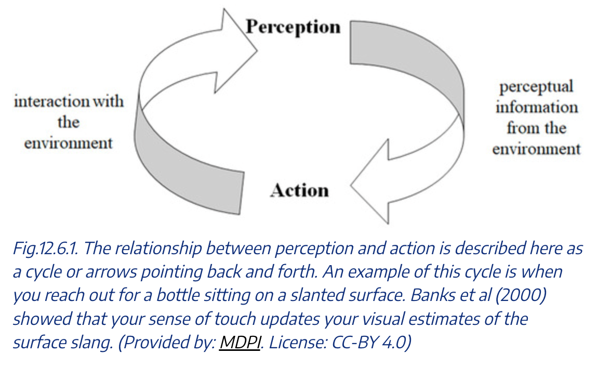
The core capability we're interested in is the perception-action cycle. How do we make a model which will meaningfully observe the results of actions it takes in the environment? How do we make a model which understands that it can take actions in the first place, in order to progress in solving some sort of goal? What kind of actions could those be? How do we handle cases where we have to do a lot of loops of this to solve the problem? These questions are broadly a bit different compared to standard "how do you solve this very hard task" benchmarks that were once the de facto gold standard for measuring how useful LLMs were.
Why are we interested in such a capability? First, for practical reasons: coding CLI tools like Claude Code and OpenAI Codex are super popular tools for coding now, and making models better in those settings has huge potential productive value1. Second, it seems like actively learning through interactions and learning through experience might be a way we can unlock yet-unseen performance from models which are currently primarily driven by massive pretraining. Human beings get better at things by learning them through experience, so it stands to reason that making a model which uses interaction with an environment could do better than what we've seen so far.
Qwen3 Technical Report
The Claude models are a little interesting in comparison to something like OpenAI o1: they seem to have a special setting that turns them into reasoning models, rather than just being them by default. DeepSeek, quiet for most of 2025, has also made clear steps in this direction as well with the introduction of their V3.1 model, their hybridification of DeepSeek-V3. These models don't seem to default to this mode the way o3 / gpt-5 / R1 etc do, and they seem broadly like "extra strong no-thinking, below average with-thinking" type models. How does this work? What's the advantage here?
The Qwen 3 Technical Report from May 2025 is one of the earliest papers which outlined how a model could be both thinking and non-thinking. Qwen is notable for an extremely high volume of model releases, so they already had both chat-optimized models (e.g. Qwen2.5) and dedicated reasoning models (e.g. QwQ). This is primarily framed as a convenience thing: sometimes you want a fast response (and would pick non-thinking mode) and other times you want complex multi-step reasoning (and would pick thinking mode), so combining these into a single model prevents a potentially costly switching cost.
Notable about the Qwen models is their heinously large training datasets - 36 trillion tokens in all. A lot of this is synthetic: text extracted from pdfs using Qwen2.5-VL, code generated by Qwen2.5-coder, etc. Likewise, following DeepSeek-R1's results, smaller models are trained by distillation from the stronger models2, rather than post-training them in earnest. For this reason we will mostly be covering the flagship: Qwen3-235B-A22B, a mixture-of-experts model which is both thinking and non-thinking.
Architecture
Qwen3 is a mostly unremarkable MoE model, architectually speaking. It uses Grouped Query Attention, SwiGLU, RoPE, RMSNorm, etc. From DeepSeekMoE, it adapts the fine-grained expert segmentation, which has become a slightly more standard architecture in recent months. But otherwise, this is mostly standard fare previously covered in the deepseek writeups I have covered previously.
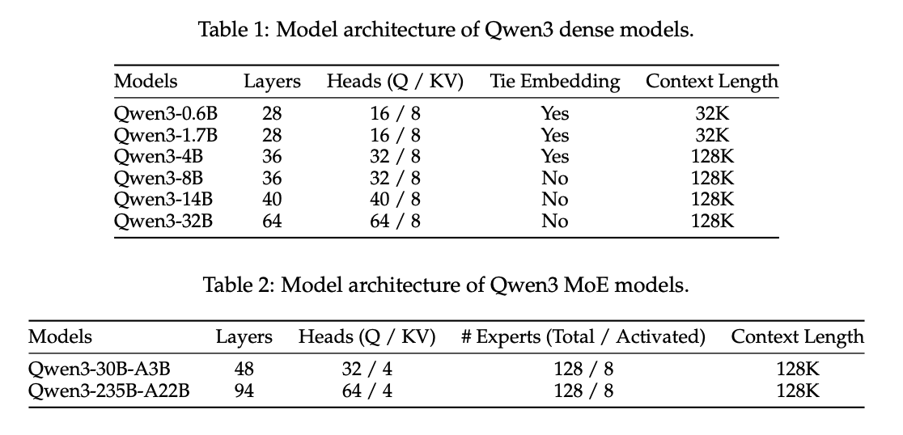
Training
Qwen3 is pretrained similar to other similar sized large models, so for simplicity we will primarily cover what imparts the optional reasoning behaviors:
Reasoning Stage in Pretraining
After the first phase of pretraining (30T tokens at 4096 sequence length), Qwen3 enters a second phase where it is pretrained on 5T of collected reasoning tokens. They are very light on details here: it goes between normal pretraining and long-context pretraining, it's partially synthetic, and learning rate is decayed at an accelerated rate. One could imagine this could be done by collecting 5T tokens from something like QwQ, filtered for quality or correctness3.
Post-training
This is where the meat of the contributions are. Recall from DeepSeek-R1 that R1 was trained with long-CoT cold start from R1-Zero, followed by reasoning RL with verifiable rewards, followed by general purpose RL post-training as normal. Qwen introduces a new phase: Thinking Mode Fusion, which takes place after the reasoning RL step.
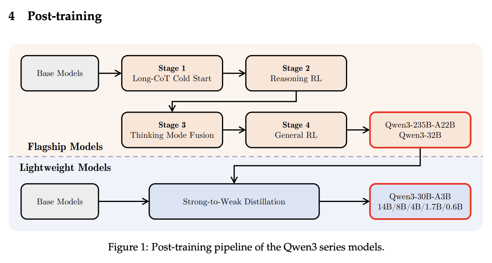
Training this model for the most part follows the formula of DeepSeek-R1. A cold start dataset is assembled using QwQ outputs filtered by Qwen2.5-72B composed of verifiable problems. Then reasoning-specific RLVR is used using Group Relative Policy Optimization (GRPO). This will naturally cause the model to output more tokens over time in order to boost likelihood of a correct response, which improves performance on difficult reasoning problems (e.g. AIME).
Thinking Mode Fusion is where we break from the standard fare. The way Qwen accomplishes this is extremely simple: they just do SFT with a chat template where thinking tokens are removed4.
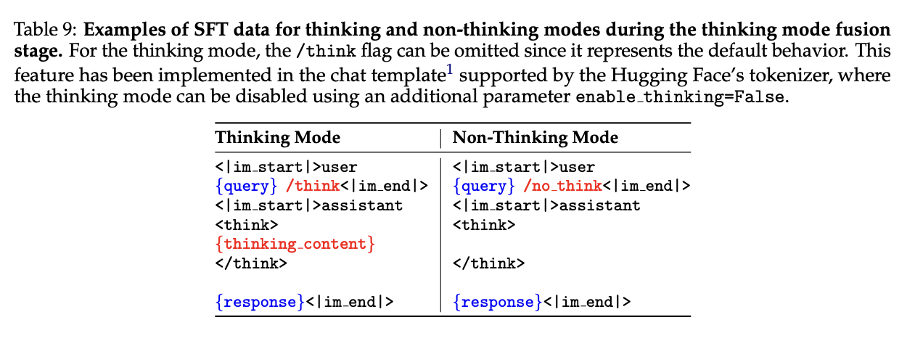
In a sense, this is the simplest possible thing you could do. Once we pass stage 2, we make the model generate a lot of responses to the queries in Stage 15 to use as the reasoning split of the SFT phase (i.e. "make the same exact response, when the /think flag is there"). On top of this, they include some standard instruction tuning data with a corresponding /nothink tag in the prompt. These have no thinking tokens, and it's functionally similar to regular instruction tuning. This way, when the user provides /think, it will think. When the user provides /nothink, it will output nothing in the think block.
Qwen3 claims that this type of fusion allows for thinking budgets, where the model becomes more capable of generating responses from incomplete thought traces. If you cross a number of tokens, the model output stream is halted, the string "Considering the limited time by the user, I have to give the solution based on the thinking directly now.\n</think>.\n\n" is added to the end, and the model begins responding. This is not anything they have trained into the model, it's just a claim that they make that the model is capable of handling fewer thinking tokens by virtue of undergoing this SFT phase6.
Following this fusion phase, they do a regular general-purpose RL post-training phase where they target a lot of tasks and specifically reward them. This is largely similar to other works, and slightly outside the scope of this writeup, but I will briefly point out that an explicitly called-out task here is "agent ability", i.e. training a model to invoke tools in multi-turn interaction cycles. Specific details on this component are light, it's one of many capabilities instilled during the general RL phase.
Results
Their resulting model is pretty good relative to thinking models.
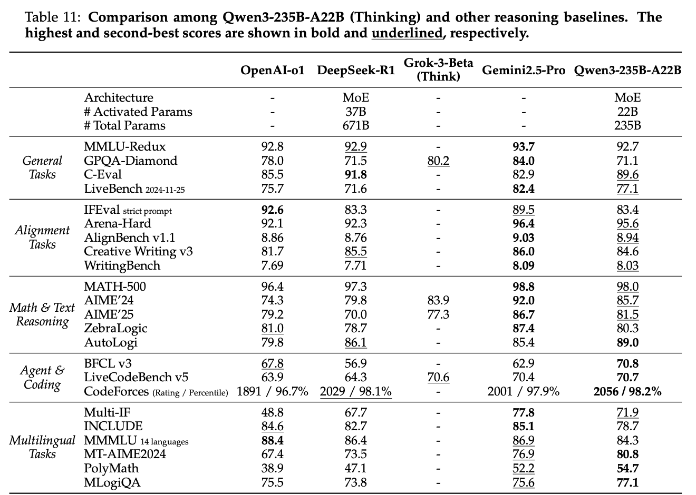
It's also pretty good relative to non thinking models.
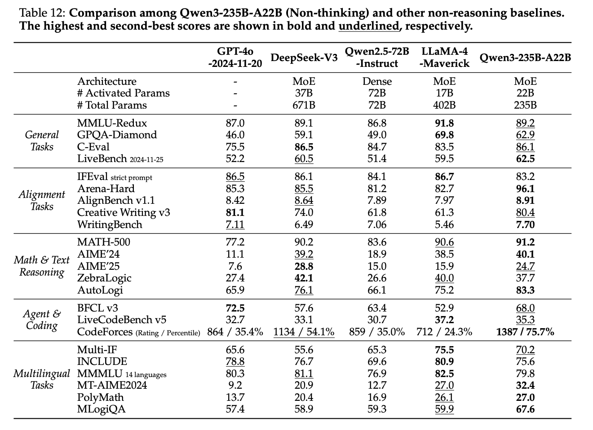
This paper highlights something curious about these hybrid models – by allowing the model to be good in both modes, it often will sacrifice performance it could have reasonably had if it had specialized in one or the other. Qwen3 seems pretty happy with this result where they don't clearly edge out the frontier, but it does hold its own against models of both classes7.
Discussion
Qwen3 is a really simple paper: train the model via SFT so that you can ask it to not output thinking tokens. A cynical take would be comparing it to a non-thinking model that you just prompt to output lots of tokens before responding:
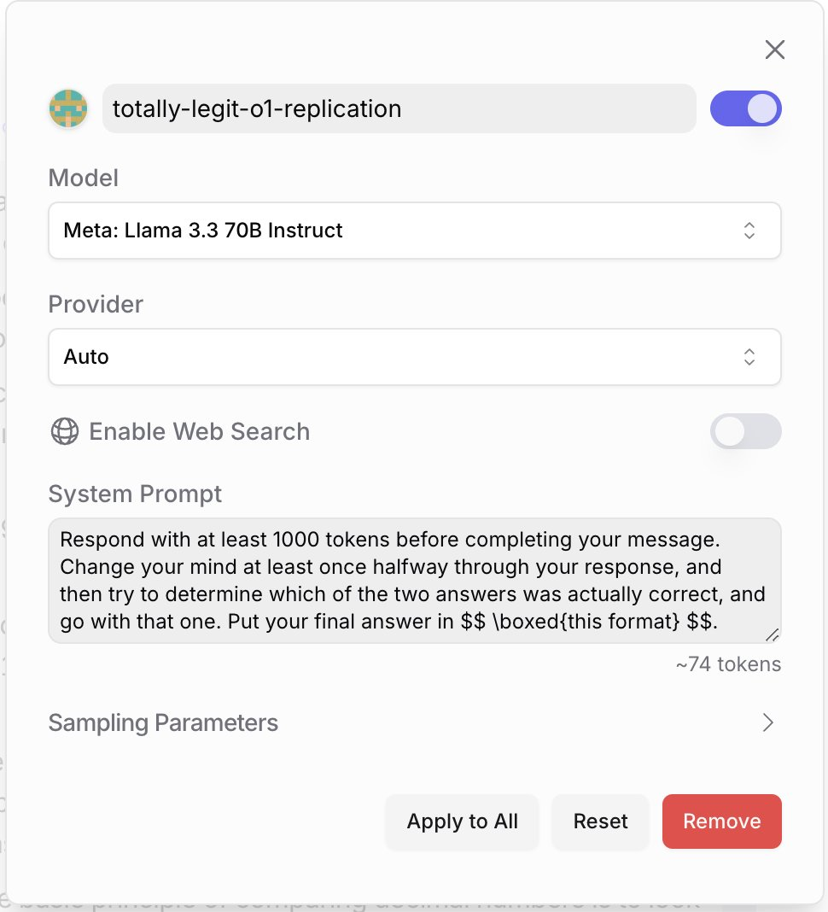
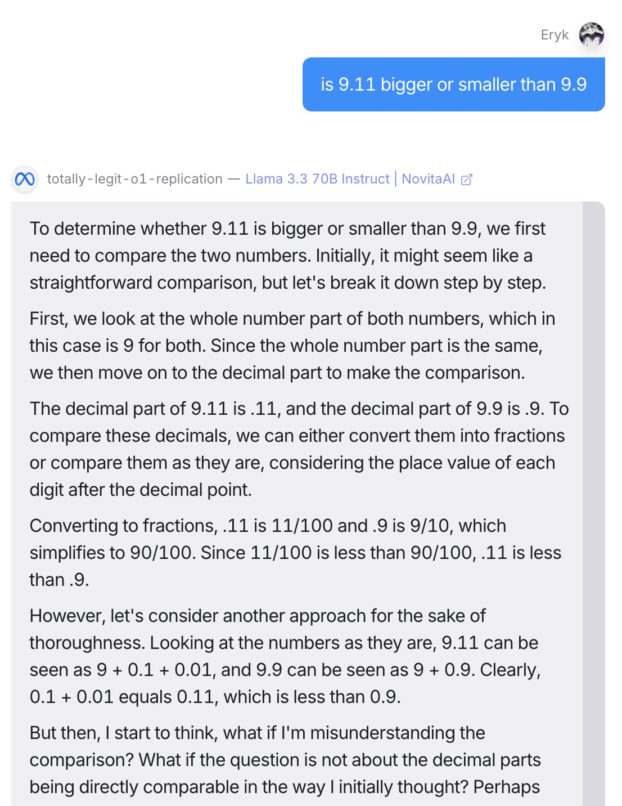
One thing which will immediately become apparent is the difficulty of comparing a thinking model to a non-thinking model prompted via this sort of chain-of-thought prompting. It is a bit like instilling a very useful prompting template into every single response the model outputs, and here with this Qwen paper we've just reverse-engineered not including that prompting template via straightforward SFT.
But we are seeing the beginnings, vaguely, of a model which is a bit more directly intended to operate in a multi-turn setting. This is actually kind of a big deal! Many labs had strongly tunneled into scaling test-time compute, and the idea of zeroing it back out just seemed like going backwards for no reason. Is it better to have your model think even longer so it can hard even harder single turn problems, or is this sort of "Blitz Chess" model still useful in places?
Kimi K2
So now we vaguely know it's possible to make a model which can be both a "thinking model" and a "non-thinking model". So let's blur the line between them even more! Moonshot's Kimi K2 model, released on July 28th 2025, is a non-thinking model intended to operate well inside of multi-turn agentic harnesses, with 1 Trillion total (!!!!) / 32B active parameters trained on 15.5T tokens. Kimi is a "non-thinking" model, but it outputs 3x the tokens of other non-thinking models. It's sort of like a halfway point between a thinking model and a non-thinking model.
Kimi is pretty open about a stated goal of theirs being agentic models that learn through experience. Another notable work by the kimi team is checkpoint-engine, middleware intended to quickly update parameters of a very large model in-place. The Kimi K2 model is also cool as hell, scoring the clear lowest sycophancy scores and having no reservations telling the user that they are completely wrong about something8.
Kimi's three main contributions are:
- The MuonClip Optimizer, which greatly stablizes training
- An agentic data synthesis pipeline which generates tool use demonstrations in agentic harnesses
- A general purpose RLVR framework which includes self-critique mechanisms
Aside A: Muon
Most very large models are trained with the tried-and-tested AdamW Optimizer, so the choice of a novel optimizer is very unusual. To understand Kimi's MuonClip, we need some background on Muon first.
Muon is a relatively recent optimizer, developed by Keller Jordan in 2024 for use in speed-training NanoGPT and CIFAR-10. Muon stands for MomentUm Orthogonalized by Newton-Schulz, which applies an orthogonalization post-processing step on top of SGD with Momentum.
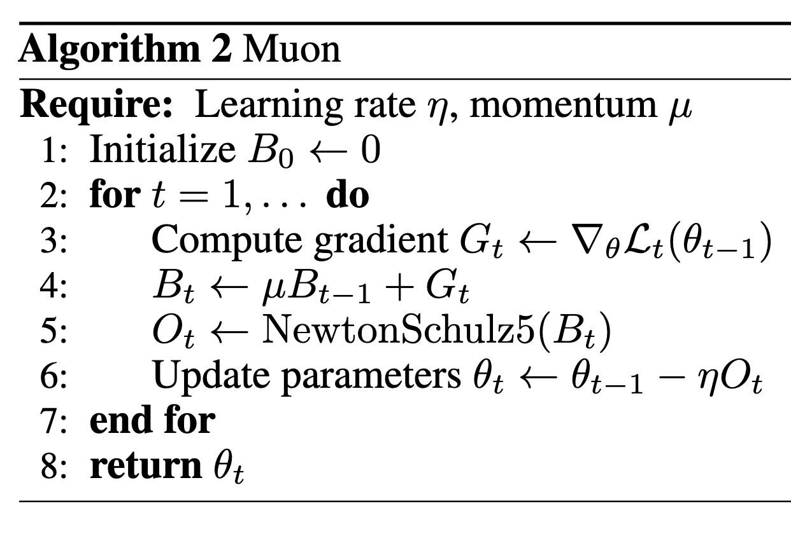
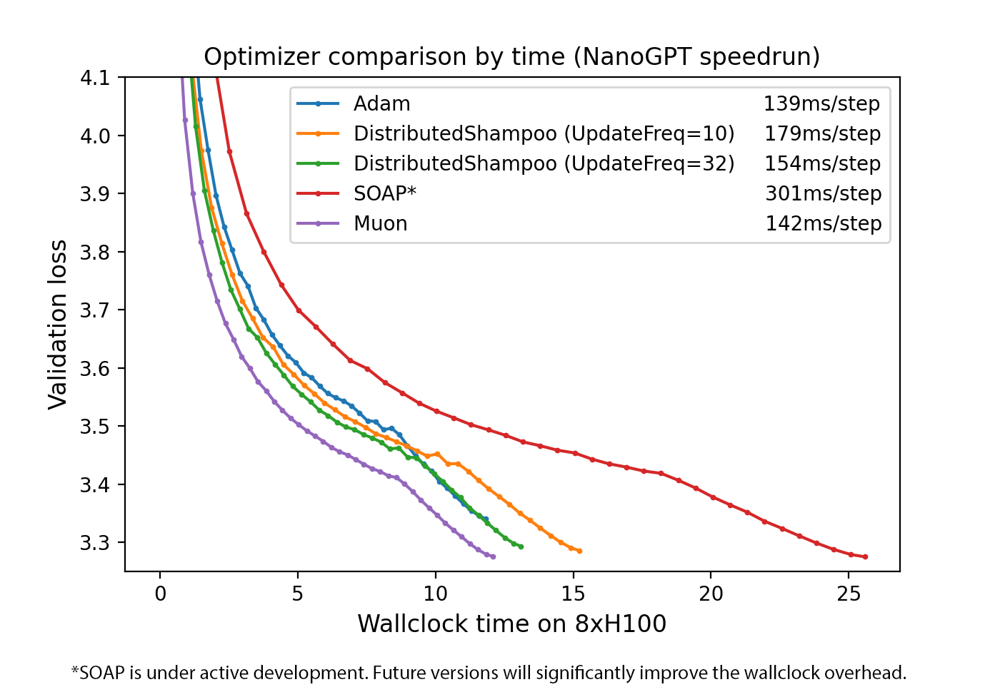
What does that mean, orthogonalize? We can take a look at the operation that makes this different from regular SGD with momentum:
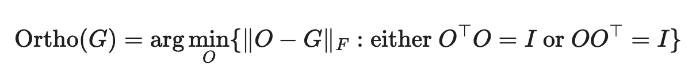
\(||O - G||_F\) is the Frobenius Norm distance, aka the square root of the sum of the squared absolute values of all the elements. We want to find the matrix \(O\) which is as close as possible to \(G\) under this distance metric. However, we are limiting ourselves to only solutions where \(O^TO = I\) or \(OO^T = I\), i.e. matrices where \(O\) is orthogonal. Recall from linear algebra that orthogonal matrices are matrices where all the columns are perpendicular to each other and have unit length: this means when you apply an orthogonal matrix to any vector, you get a vector the same exact length, just transformed (rotated / reflected / etc).
So what Muon does is replace the update matrix with the something roughly orthogonal to it. They use an iterative algorithm called Newton-Schulz to approzimately orthogonalize it. Why would this make it better than AdamW or SGD-Momentum? From Jordan's blog:
We would first like to observe that one valid answer would be: It just is OK? (Shazeer 2020)
…
for an empirically-flavored motivation, we observe that based on manual inspection, the updates produced by both SGD-momentum and Adam for the 2D parameters in transformer-based neural networks typically have very high condition number. That is, they are almost low-rank matrices, with the updates for all neurons being dominated by just a few directions. We speculate that orthogonalization effectively increases the scale of other “rare directions” which have small magnitude in the update but are nevertheless important for learning.
The biggest advantage Muon has over AdamW is that it's super fast compared to AdamW, improving the training speed on nanoGPT by 35%. However, optimizers are a ruthless business. It seems like every week there's a new optimizer which supposedly beats AdamW, and then everybody seems to keep using AdamW. It's unclear if the gains from Muon would scale to something truly huge, or if any new challenges would emerge from there.
MuonClip
Switching gears back to the Kimi paper, there does seem to be a catch scaling up Muon to something huge. Namely: training instability due to exploding attention logits. Exploding and Vanishing Gradients is a classic source of training instability in ML models, but lots of little things help make it a less common problem in modern training: stuff like batch norm, residual connections, gradient clipping, and so on.
Kimi's solution to the exploding attention logits in Muon is QK-Clip. This is pretty straightforward: define a big threshold \(\tau\), and if the max attention logit exceeds that threshold, it will rescale the projection weights \(W_q\) and \(W_k\) down only for the head that explodes. Basically: when a logit is going to explode, make it not explode, otherwise follow Muon as normal.
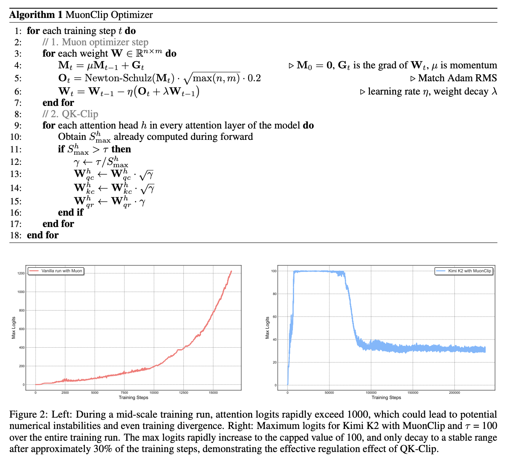
As a result, they stablize this algorithm for large transformer models that worked better than AdamW on smaller transformer models.
Token Efficiency via Rephrasing
How do we fit the most possible value into a corpus of tokens? We already know from the scaling laws work in DeepSeek-LLM that token quality influences the subsequent results a lot – a token isn't just a token. Training a single epoch is insufficient (especially for rare facts), but training more than one epoch damages generalization. How do we ensure a high volume of high quality tokens without overfitting?
Kimi's contribution here is: rather than showing the same text to a model twice, get a language model to rephrase the text in a different way, and show them two versions of the same text. They find that extending the dataset this way is generally way more effective than including more epochs: the same text 10 times is way less valuable than the same text 10 ways9.
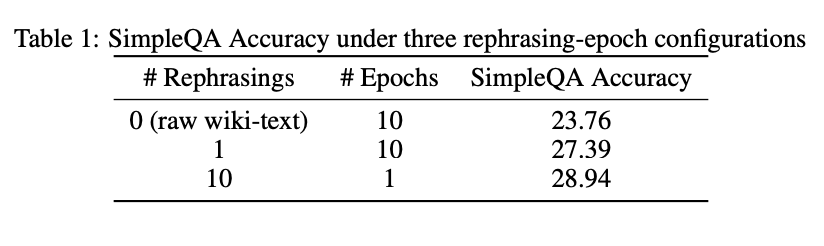
Architecture and Pretraining
Kimi K2 is more or less an extremely large version of DeepSeek-V3, leveraging MoE / MLA / fine-grained expert segmentation / etc.
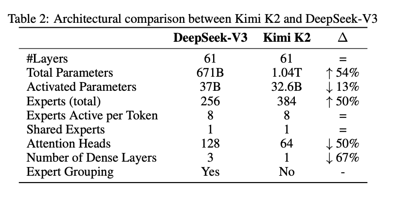
Kimi K2 was notable for being the first publicly available open-weights model which had over 1 trillion parameters, but interestingly it seems like most of this scaling compared to DeepSeek-V3 was predominantly horizontal: it's the same depth as V3 with roughly the same number of active params, just with way more experts.
It's important to remember that the stated purpose of Kimi K2 is to exist in agentic applications: multi-turn, with long sequence lengths, and so on. Kimi calls out that they use only 64 attention heads compared to V3's 128 – This results in 83% more inference FLOPs for a roughly 1% improvement in validation loss. This is a great tradeoff for hill-climbing single-turn problems, but not such a good one for something specifically tailored for agentic applications, so Kimi opts for half the attention heads.
Pretraining follows largely the same standard formula, but with MuonClip added. They train on 15.5T tokens with a constant learning rate, which is then decayed with a cosine decay. The end of pretraining concludes with a long-context pretraining phase using YaRN to extend to 128k context size.
Post-Training
Agentic Data Synthesis for Tools (SFT)
Kimi's SFT phase involves a substantial data synthesis pipeline intended to generate a large volume of data which will help the model learn to use tools. This pipeline has three stages:
- Construct a large repository of tool specs from the internet + LLM-synthetic tools
- Create an agent and corresponding tasks for each toolset in the tool repository
- For each agent and task, generate trajectories where the agent does the task using the tools
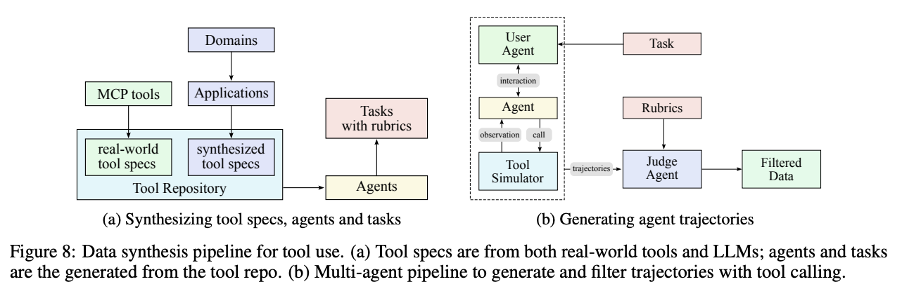
For step 1, they first collect 3000+ MCP tools from public github repositories. After that, they evolve synthetic tools using a hierarchical domain generating process, yielding 20,000 synthetic tools covering a large swathe of possible applications.
For agent generation, they just generate a large number of system prompts, and then equip those system prompts with different sets of tools from the repository. These in turn are used to generate tasks which could conceivably be solved by using those tools.
Multi-turn trajectories are then generated: they simulate a lot of possible users via LLM to go back and forth with the agents, and use a "sophisticated tool simulator (functionally equivalent to a world model)"10 in order to simulate what would happen if the agent called the tool. This is used to generate a large volume of multi-turn dialogues where a user submits a query and the agent calls tools over multiple turns. These are subsequently filtered using LLM-as-judge to keep only the ones which produce trajectories that solve the tasks.
They also forego the world model for some proportion of the trajectories, in favor of actually running code sometimes, in order to produce maximally accurate ground-truth interaction data. They assemble a very large multi-turn SFT dataset this way, which they claim significantly improves the tool-use capabilites of their model.
Reinforcement Learning
K2 goes through an interesting RL pipeline which introduces some attempt at extending beyond verifiable rewards.
For the standard Math, STEM, and logic tasks, they collect a large number of tasks as expected. A key thing done at this step is filtering out prompts which provide not too much signal: if the SFT model always gets the answer correct, it's not useful to include in the RL prompt set; if the SFT model never gets the answer correct, it's also not useful to include in the RL prompt set. A lot of detail is also provided on how they verify a lot of verifiable problems: there's a lot more LLM-as-judge in this stage than you might expect.
The really interesting part of Kimi K2's RL phase is the Self-Critique Rubric Reward. This is intended to be a "verifiability mechanism" for typically non-verifiable problems, subject to some very straightforward rubrics. These are intended to instill fundamental values in the LLM, as well as eliminate annoying or reward-hacking-like behaviors:
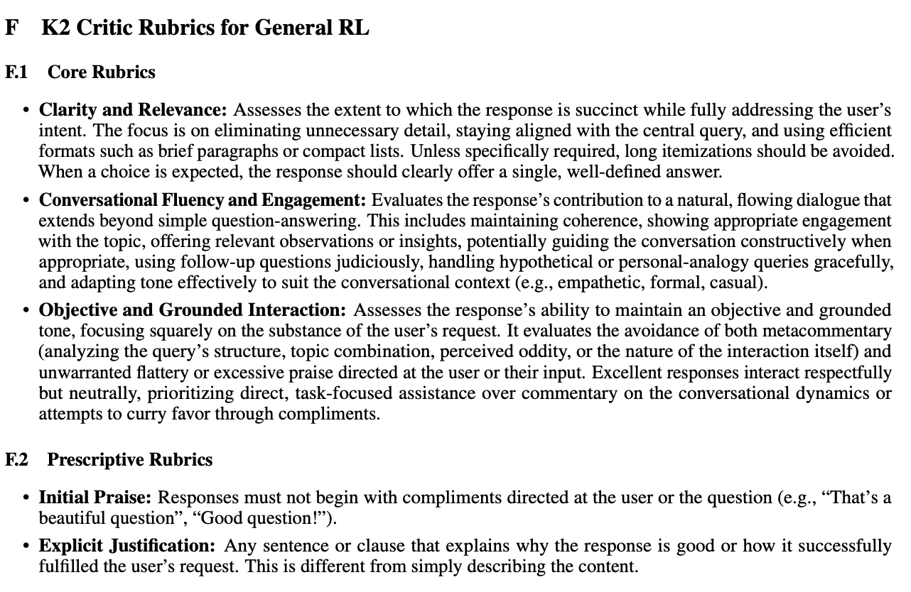
As mentioned earlier, Kimi K2 scores super low on the flattery benchmarks compared to models like 4o, so it's clear that this phase is imparting some interesting behavior to the model.
TODO Some additional background necessary for this section
The Kimi K2 RL algorithm follows Kimi 1.5 which uses online policy mirror descent. The changes from K1.5 are using Muon as the optimizer, an enforced maximum token budget11, an auxiliary PTX loss, and a high sampling temperature with a decay schedule. TODO go into detail on these.
There additionally is a lot of detail about the RL infrastructure, specifically the training / checkpoint / inference engines necessary to make it work at scale. These are slightly outside the scope of what I want to cover here, but are worth a read.
Discussion
Kimi K2 gets some really interesting results. As mentioned, it's sort of complicated to compare it to other models. It's a bit like a reasoner model squeezed into a non-reasoner box. It's good at using tools, and it operates well in agentic harnesses. Getting Muon to work for a model this large is also no small contribution – it will be super interesting to see if it catches on or not.
One thing that stands out to me about the Kimi K2 work is the prevalence of LLM-as-judge, an often-proposed verification mechanism which feels like it never pans out in practice. Kimi used it all over the place, and it actually did seem to work at making the model better at being less sycophantic. Anthropic's Constitutional AI paper was the first to outline this sort of RLAIF approach way back in 2022, and DeepSeek-V3 made some vague allusion to using this late last year. Here we have a clear, concrete example of it working to do a specific thing: an undesirable behavior (sycophancy) addressed primarily through self-critique as RL signal.
I am admittedly surprised by this. I wonder if it's the case that there are thresholds of capability where better and better LLMs can self-critique their way to improved performance on gradually harder tasks, and similar to "reasoner" behavior emerging through simple RLVR, I wonder if "verifying unverifiable problems" is another such wall that can be crossed eventually.
Hybrid Models - GLM-4.5
GLM-4.5 by Zhipu AI further iterates on the hybrid model literature. They get a great result here, putting together a 355B total / 32B active parameter model trained on 23T tokens which seems roughly at parity with the Claude and OpenAI models. These models are natively capable of both extended thinking and immediate responses much like Qwen3, Claude Sonnet, and so on.
Architecture
GLM largely follows DeepSeek-V3, differing by making the model much deeper, using fewer experts, and using Group-Query Attention instead of MLA. But otherwise, it's an MoE with fine-grained experts, using loss-free balancing, with multi-token prediction layers etc.
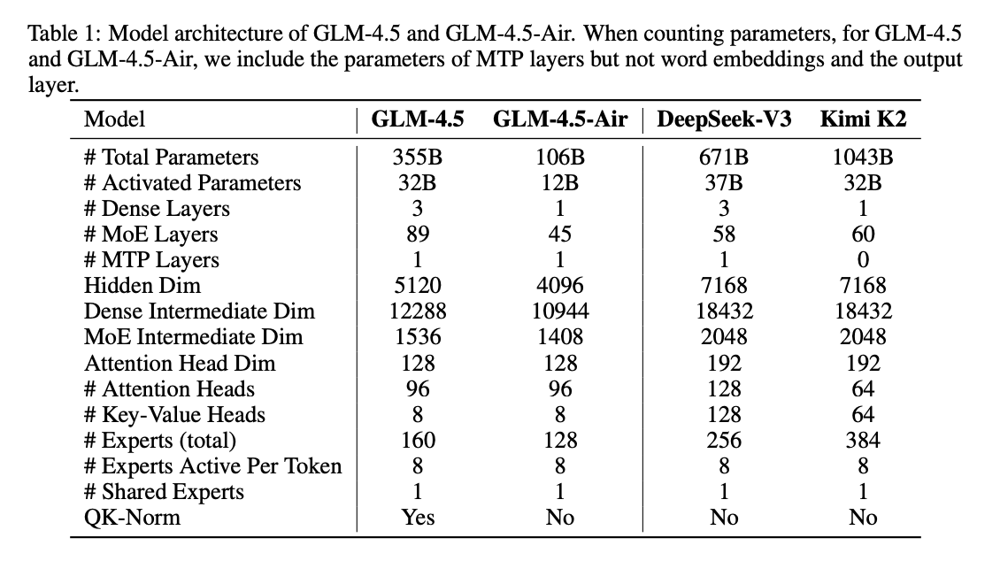
It's sort of the opposite of Kimi K2 – rather than making V3-but-wider, it made it deeper.
Pre-Training and Mid-Training
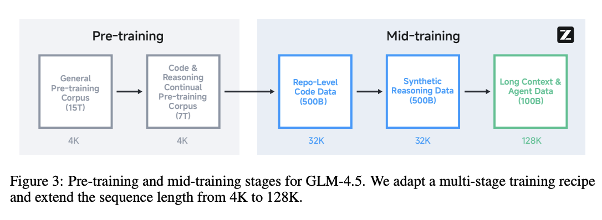
Pretraining is similar to Qwen3, a general-purpose pretraining phase with a reasoning pretrain corpus after that. Rather than immediately jump into long context pretraining a la Kimi K2, GLM-4.5 uses three phases that they refer to as "Mid-Training"12: Repo-level code training at 32k context length, Synthetic Reasoning data13 at 32k context length, and "Long-Context & Agent Training" which repurposes the typical long-context pretraining phase to include the large-scale synthetic agent trajectories similar to Kimi K2.
GLM-4.5 uses Muon as the optimizer much like Kimi K2, and did not report the same exploding logits problem as Kimi did (TODO: Why?).
Post-Training
GLM-4.5 divides post-training into two stages. First, they constuct Expert Models, essentially three finetuned models for each of Reasoning, Agent, and General chat14. Second, they use self-distillation to combine these three models back into a single model good at all three things.
SFT
As with Qwen3, the thinking-vs-non-thinking boundary is primarily determined in the SFT phase here: the experts are provided with data suggesting which types of responses should generally yield no long CoT, allowing the model to operate with or without producing thinking tokens for any given response. Likewise, GLM-4.5 follows Kimi K2 for agentic SFT data, by accumulating tools, generating trajectories, etc.
Reasoning RL
GLM-4.5 uses GRPO (sans the KL loss term) for the reasoning RL phase, which of course introduces the difficulty problem: if every completion for a prompt is correct, there is no signal, and if every completion is wrong, there is also no signal. This introduces a problem where once the model improves during training, a bunch of examples stop providing any value whatsoever (i.e. wasting time for no reason).
This paper goes into detail about addressing this problem15: they use a two-stage approach. First, they filter down to problems which the SFT model can get some proportion of the time, but not always. Then, after training for a number of steps, they switch datasets to examples which are pass@8=0 and pass@512>0, i.e. problems which are gettable by the SFT model but only barely. This improves performance substantially compared to saturating only moderately difficult problems.
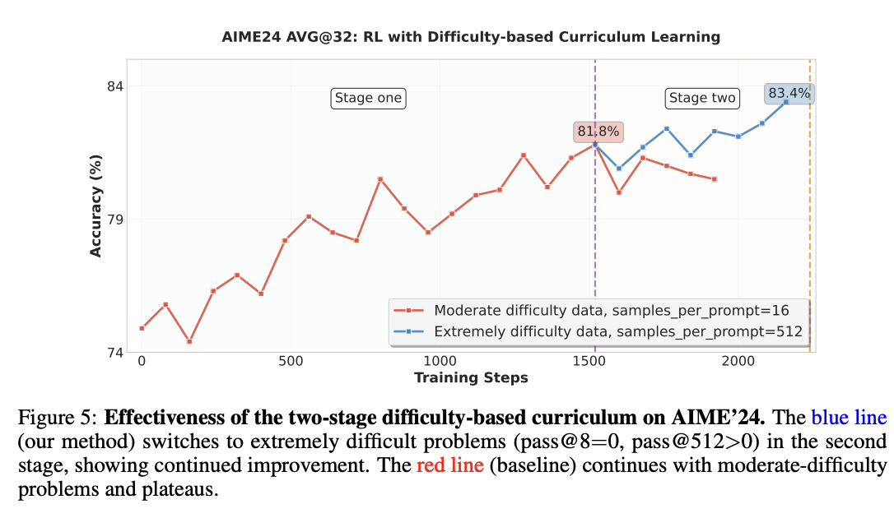
They use 64k output length throughout the Reasoning RL phase16, with dynamic temperature that will rise when average rewards level off, in order to increase exploration17. They do RL upon verifiable code and science problems and see increased performance as a result.
Agentic RL
On top of the now-standard-fare reasoning RL, GLM does specifically targeted RL training for agentic uses, specifically to improve the model at verifiable web-search and code-generation tasks.
The authors assemble a dataset of web-search problems by synthesizing questions based on multiple internet documents, and then obfuscating content from those documents in order to require a successful web search to complete properly18.
For software engineering problems, this is done via assembling a dataset of github issues and subsequent pull requests addressing them. This provides a context (the repo), a query (the issue), and a solution / unit tests (the pull requests) that form realistic environments for the model to learn to solve over multiple turns.
Iterative Distillation
A really interesting component of GLM's RL pipeline is Iterative Self-Distillation. This can be viewed as something similar to what was done to produce DeepSeek-R1, but repeated several times.
In DeepSeek-R1, they created DeepSeek-R1-Zero via RLVR, created a cold-start dataset of filtered responses from R1-Zero, and performed SFT upon the base model with these before doing RLVR on that model to create DeepSeek-R1. GLM takes this a step further. Once they train a model using RL, they generate even more cold start data from it in order to create a superior SFT model, and then perform RL upon it once again, looping this process19. This can gradually push the difficulty of problems it's capable of solving, making it a pretty efficient way to increase the performance during this phase.
It's not 100 percent clear in the paper what order everything is performed in. But this is likely how they are combining the models after stage 1 of the post-training phase: three fine-tuned models are produced, one very large SFT dataset is created, and that in turn produces a superior post-SFT model.
Scaling via More Turns
One thing I love about this paper is their result showing that you can reap performance benefits associated with scaling test-time compute just by allowing the model to take several turns, interacting with the environment, observing, and acting over and over. This is much like a reasoner model scales test time compute with lots of tokens before responding, except in this case the model gets to continuously receive an updated status of the world during every turn, which seems obviously strong.

General RL
Like most models, GLM finishes up with general-purpose RL for improving various things about the model. They do RLHF and RLAIF to improve instruction following, function calling, mono-lingual responses, formatting errors, and so on20.
Function-calling RL here has a special section dedicated to end-to-end multi-turn RL. The formulation here is simpler than expected: an LLM acts as the user, and you are given some task \(I\). You are given a reward of 1 if all of your tool calls are correctly formatted, and the complete task \(I\) is completed at time \(T\) (per the user's feedback). Otherwise, the reward is 0. This can include asking the user for more information, if necessary, as long as the formatting is always correct and the task is eventually completed.
Results
GLM-4.5 and GLM-4.5-Air benchmark very well. One very interesting thing GLM-4.5 provides beyond just benchmarks is human blind testing with specific participants, which is an extreme rarity compared to using something crowdsourced comparisons (e.g. LMArena, which I am not fond of these days).
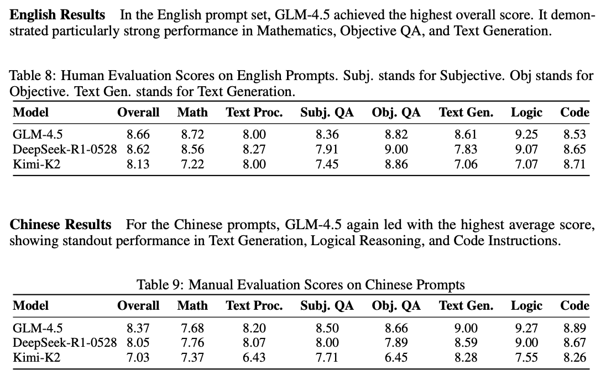
These results are not so easy to interpret directly, but they're really interesting. They show off some interesting personality of these three models.
Likewise, there's substantial comparison for GLM specifically operating inside Claude Code, determining which completions are preferred for a benchmark of specific tasks.
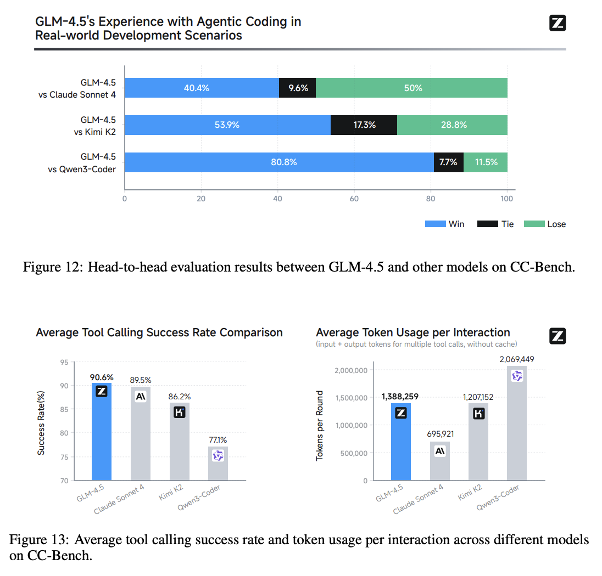
There are some zones where GLM edges out Sonnet 4, but in general it trails just behind, clearly ahead of other open source models. Important to mention here is price: Zhipu's GLM subscription plan relative to the equivalent Anthropic one is just $3 per month. GLM-4.5 is substantially cheaper than Claude Sonnet, which makes these results pretty noteworthy.
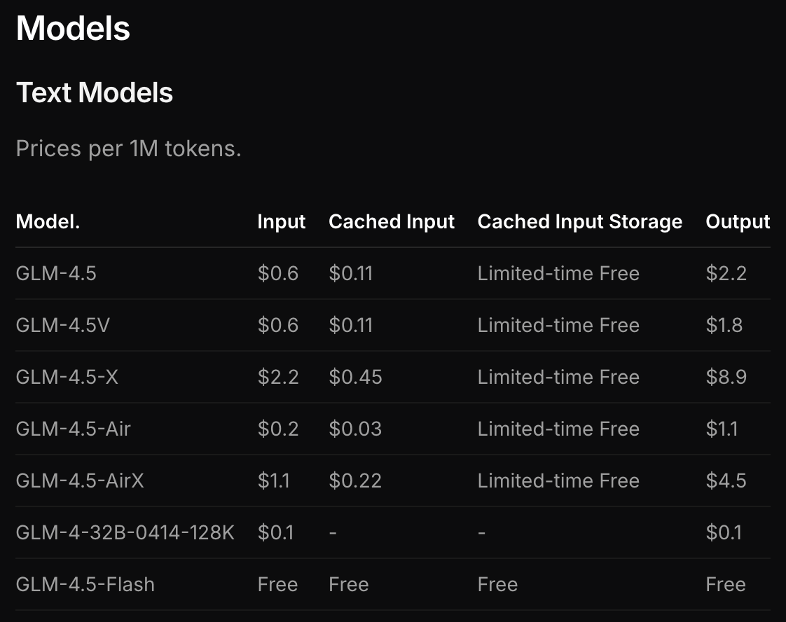

Discussion
We have some interesting tools in our toolkit now:
- SFT for thinking / no-thinking
- Data Synthesis for tool use
- Iterative Distillation
- Multi-turn RL with simulated user / environment interactions
It seems like we have a pretty good handle now on how to create these models which are capable of thinking vs responding quickly, and even ones capable of determining that on their own. It's easy to force a model like GLM-4.5 to not think just by prefilling a zero-token reasoning trace before it continues responding, and otherwise it will decide on its own based on similarity to the SFT data it was presented.
We have primarily been focused upon these agent models relative to their ability to operate in claude-code-like CLI tools. But the agentic rabbit hole actually does a bit deeper: deep research tools are another use case of agentic, multi-turn workflows which have to synthesize a lot of information together to work well. This produces yet-more challenges we haven't addressed much yet. What do those look like?
Agentic Continual Pretraining: Scaling Agents via Continual Pretraining
On September 16th 2025, Alibaba dropped Tongyi DeepResearch, a fully open source deep research web agent AgentFounder which was extremely small: just 30B total / 3B active parameters, matching or outperforming OpenAI Deep Research on a variety of benchmarks21.
Alongside this model drop, they also dropped six (!) separate technical reports outlining the steps they took to get it working. The first of these was Scaling Agents via Continual Pretraining, which explains the pre-training steps which help when creating an agent model specifically for research. In this paper, they outline how they created the model itself, which outperforms OpenAI deep research / Gemini deep research / DeepSeek / GLM / etc at research tasks like Humanity's Last Exam22.
The major thesis is that open source Deep Research agents (e.g. GLM / DeepSeek in web-browsing modes) lag behind closed source Deep Research tools (e.g. Gemini / OpenAI) because they are dependent on general-purpose foundation models, which are A: not trained with this setting in mind, and B: lack the inductive biases for agentic tasks.
To address this, Tongyi introduces Agentic Continual Pretraining (Agentic CPT). This is a two-stage training strategy where the model first pretrains for First Action Synthesis (FAS) and then pretrains for Higher-Order Action Synthesis (HAS).
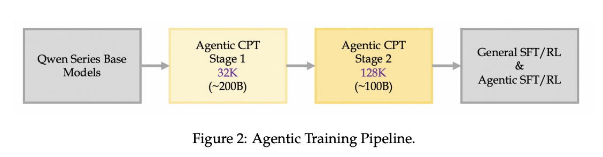
Agentic CPT
TODO: This paper is pretty confusingly written and there's typos everywhere. I need to double check that my understanding is all relatively correct.
Tongyi's Agentic CPT is a relatively modest additional 300B tokens which are pretrained on top of Qwen-30B-A3B-Base. As mentioned, it follows two phases:
First, in stage 1, 200B tokens are pretrained, primarily consisting of shorter-context agent workflow examples. This is intended to teach the model how to do preliminary agent tasks: invoking tools, reasoning over multiple steps, and so on.
Second, in stage 2, 100B tokens are pretrained with much longer 128k context windows, primarily consisting of much longer and more involved agent trajectories. This allows the LLM to get better at the more complicated tasks which involve a lot of complex decisions, as well as developing an eye towards more long-horizon planning.
First Action Synthesis
It is a bit of a chicken and egg problem to create agent trajectory data without an already-trained agent. With no supervisory signal to work with, we need to figure out some way to generate example trajectories directly from the data sources.
First Action Synthesis teaches the model how to do two types of action: planning and reasoning. This is done by transforming static knowledge sources into multi-style questions.
Phase 1 of this is building an "open-world memory" by rephrasing text in web pages to tuples containing keys and facts about those keys:
For instance, web data containing “The number of tourist arrivals in France increased from 3,793 thousand in May 2025 to 4,222 thousand in June” can be reformulated as: (“France”, “Tourist arrivals in France reached 4,222 thousand in June 2025”), rather than limiting to conventional wiki-style knowledge such as “Paris is the capital of France.”
After building a really large dataset of facts like this, in phase 2 they sample from this knowledge base in order to generate a lot of questions which they learned from collecting this information from web search.
The notable thing about this approach is that they go from "web-search -> multi-source knowledge -> question -> answer" in generation, which allows for the creation of a dataset of the form "question -> web-search -> multi-source knowledge -> answer".
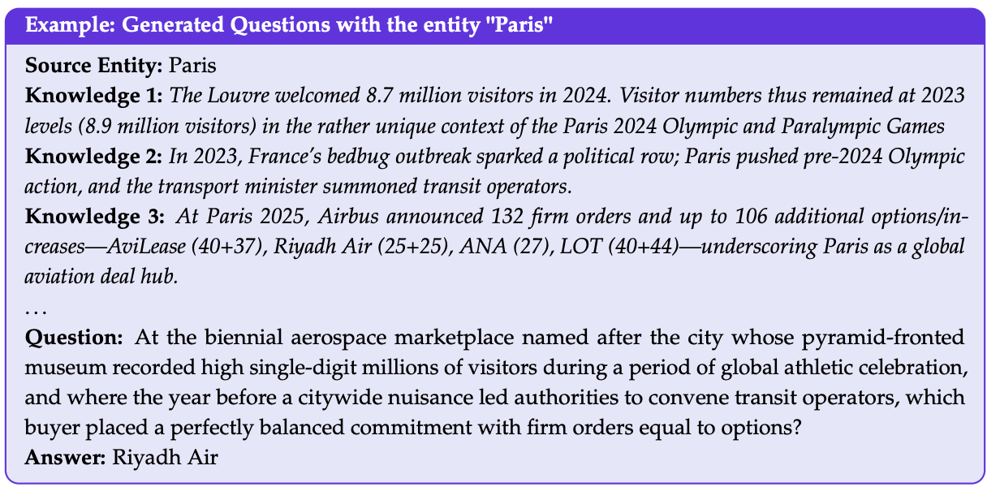
In addition, a large quantity of synthetic data are generated for the LLMs initial planning phase before kicking off the agentic turnflow. This part seems largely possible with existing LLMs ("plan how you would look up X, predict which tool is the first one you should use, format an API call to that tool") which allows for the full FAS pretraining set to take the form "question -> planning -> web-search -> multi-source knowledge -> answer"23.
However, from very large accumulated datasets, it becomes more necessary to inclde the ability to synthesize the accumulated information before attempting to answer the question24. After they've accumulated data as described above, they use LLMs to decompose the questions into sub-questions, generate detailed chains of thought for each sub-question, and then combine them into a longer final answer25.
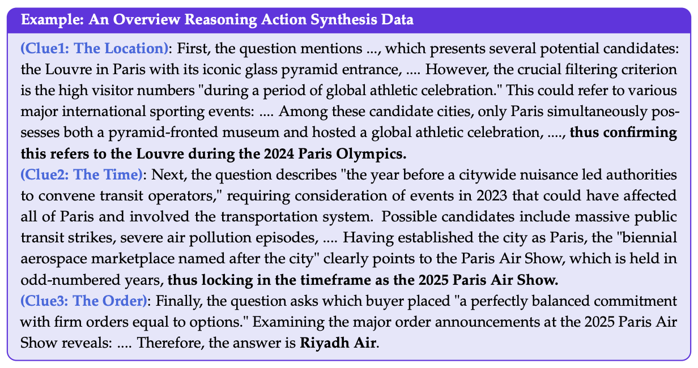
This strategy is used to generate a relatively high volume of agent data which can be used for the first stage of pretraining.
Higher-order Action Synthesis
From here, the question turns to how we can generate long trajectories that become more critical as task complexity increases. Now that we have a mechanism to instill reasoning-then-act behavior into a model (through FAS), we need to figure out how to use that to create long-horizon data. The mechanism for this, Higher-order Action Synthesis or HAS, involves two steps: step-level scaling, and contrastive decision-action synthesis.
For step-level scaling, we consider \(N\) possible actions we could take at a given spot. The LLM then generates a reasoning-then-act sequence \((S_k, R_k)\) for each of \(N\) candidate actions, where \(S_k\) is the initial plan and \(R_k\) is the subsequent tool call / action. All of the candidate plans are then concatenated together \({S_1, S_2, ... S_N}\) in order to create a long plan with many possible candidate options.
For contrastive decision-action synthesis, this is then transformed into several possible examples where each possible candidate move is chosen, it's corresponding \(R_k\) is added, and the final judgement of correctness is appended at the end. These are cycled through until one of the candidate option solves the task, creating a single long-horizon training example:
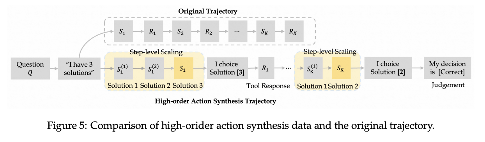
Results
A lot of the details describing how this model works are buried in the papers which are to follow: this paper describes the Agentic CPT and also reports their final results26. A lot more went into this model than just Agentic CPT so it feels premature to talk about results here:
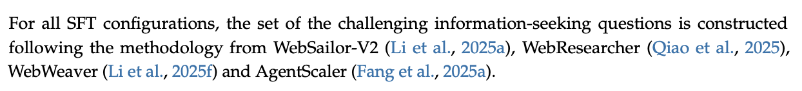
but regardless: they report really good results on research-type tasks. It's really difficult to know what comparisons are fair or not, since we aren't sure how specialized many of the models on this list are for research tasks (or how big they are), but as far as open source goes it scores the highest we've seen so far.
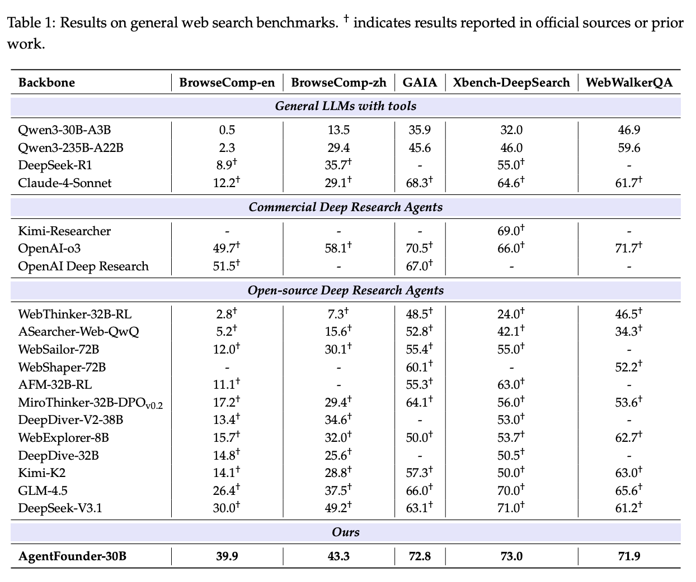
They also do make some claims about the amenability of their Agentic CPT for further agentic-focused post-training. Compared to directly post-training the base model, CPT seems to provide a noticeable "warm up" for future post-training, despite including only a modest 300B extra tokens.
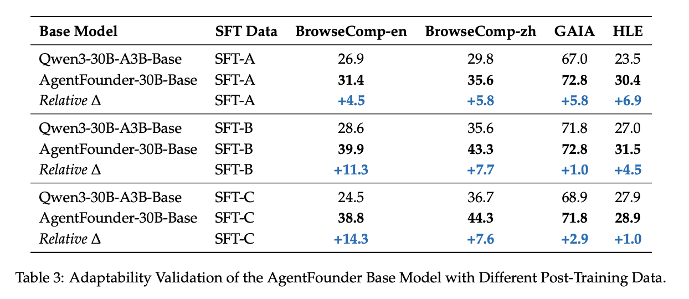
Discussion
Moving agentic capability data into pretraining (where models usually "learn facts" rather than just "learn to follow instructions better") makes a lot of sense, and the AgentFounder work can be viewed as being similar in spirit to GLM-4.5's mid-training strategy27, but adapted for web research more than for code.
The really striking thing about this model isn't the performance so much as the size: 30B/3B active is insanely small, and it really recontextualizes for me how weak these general-purpose foundation models are at this sort of task. It's really hard to imagine that performance here saturates at such a small size. More likely is that the big foundation models have tons of ground to gain on this type of research task, and that scaling up this formula to e.g. 300B/30B active would show yet-more gains.
But a lot of detail here is punted to other papers. What else happened here?
Post-training: WebSailor-V2
The WebSailor-V2 paper explains the post-training pipeline necessary to equip a pretrained language model with web-agent capabilities. There's additional SFT+RL training which can improve performance at this part of the pipeline substantially.
The two main contributions in this work are SailorFod-QA-V2, a QA SFT dataset for research agents; and an RL environment based on an offline snapshot of wikipedia. These together form a complete post-training pipeline which can be used atop pretrained models.
SailorFog-QA-V2
SailorFog-QA-V2 is similar in concept to the FAS phase of Agentic CPT, but with more focus on generating a dense knowledge graph. To construct the dataset, they begin with seed entities (things to learn about), and use web searches to associate a large quantity of information about each entity. This graph is gradually expanded over time by targeting leaf nodes in order to connect them to existing nodes in the knowledge graph. Importantly, this will create cycles, which is a major improvement over other approaches (e.g. the original SailorFog-QA) which just generate a very large tree structure.
With a dense knowledge graph, they extract subgraphs of this graph via random walk and then use this extracted subgraph to generate question-answer pairs. These subgraphs are modified by introducing uncertainty via obfuscation or rephrasing, in order to force the model to answer questions even when the information is imperfectly clear but provides sufficient context.
This data is used in the SFT Cold Start phase of WebSailor-V2's Agentic Post-training, built atop the Qwen3-30B-A3B-Thinking-2507 model28.
Agentic RL
To avoid the heavy costs of RL posttraining a model with real web searches, real APIs, and real data, WebSailor-V2 instead opts to create a simulation environment using a small set of tools and an offline snapshot of Wikipedia. This allows for testing data with ground truth to be assembled, as well as train the model to search and navigate common web pages that it will see in real scenarios. A tightly engineered toolset is used in "real environment" scenarios in this phase also, such that the model gets some exposure to non-wikipedia sources as well.
Their RL pipeline uses GRPO slightly adapted for the setting (i.e. with the KL term removed). Likewise, negative samples are selectively excluded from the loss calculation (e.g. if they are too long) in order to avoid degraded performance29.
There is a full paragraph in this section which is bolded, stating that the RL algorithm isn't as important as the synthetic data mix for this part of the process. It also mentions that training on the test set for BrowseComp actually did worse than using the generated synthetic data30.
However, we consider that the algorithm is important but not the only decisive factor in the success of Agentic RL. We have experimented with many different algorithms and tricks, and find that data and stability of the training environment are likely the more critical components in determining whether the RL works. Interestingly, we have tested to train the model directly on the BrowseComp testing set, but the results are substantially poorer than when using our synthetic data. We hypothesize that this disparity arises because the synthetic data offers a more consistent distribution, which allows the model to be more effectively tailored. Conversely, the human-annotated data (such as BrowseComp) is inherently noisier. Given its limited scale, it is difficult to approximate a learnable underlying distribution, which consequently hinders the model to learn and generalize from it.
Discussion
Web search and agent-powered information retrieval are, in some sense, another mechanism for scaling test-time compute. As we've seen earlier, we can scale test-time compute by outputting more reasoning tokens, doing more operations over more turns, or getting better and better at looking up the answers to questions. From the text:
This result strongly validates our core hypothesis: equipping a model with exceptionally strong information retrieval and synthesis capabilities can profoundly enhance its logical reasoning abilities, allowing it to effectively "reason over" externally acquired knowledge and overcome the limitations of its intrinsic scale. We believe agentic paradigm is a good way to close the gap between strong and weak models.
TODO: figure out more to say about this paper lol
Context Management: WebResearcher
WebResearcher is yet another component of the Tongyi DeepResearch training pipeline. This time, they're outlining context management, and data synthesis for web-based tool use.
The core problem being addressed in this paper are primarily engineering ones. Typical open-source approaches put a lot of documents into the LLMs context window, and ask the model to draw conclusions based on that. As the number of retrieved documents grows, this will flood the context with text that is mostly noise31. This introduces an undesirable trade-off: do we deliberately get fewer documents, or do we risk adding irrelevant ones to the context?
IterResearch is the paradigm introduced by this paper, intended to formulate the deep research problem as a Markov Decision Process (MDP). To get around the mono-context problem, they instead include an intermediate step which will consolidate everything it's seen into a report, clear out its workspace, and repeatedly update this report as it goes, rather than keeping everything stuck in the context. The claim here is that this formulation allows their model to pursue "arbitrarily complex investigations" by preventing additional documents from filling up the context32.
Likewise, this formulation enables parallelization of the research process. All you have to do is share the report between multiple agents, and have them explore separate sets of documents before updating. They call this approach the Research-Synthesis Framework and distinguish results leveraging this parallelization with the "heavy" label33:
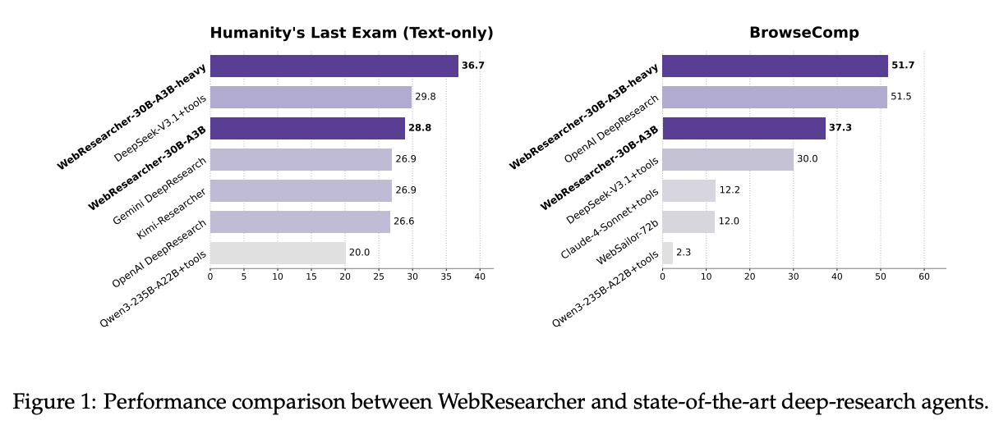
IterResearch
The IterResearch paradigm is super simple to understand. Rather than linearly flooding the context with new documents, you just iterate over several rounds. There are three steps in the IterResearch workflow: think, report, action.
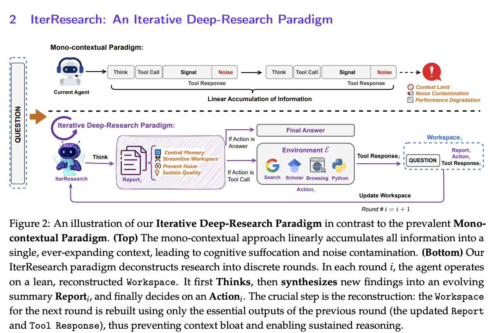
This is super easy to grasp and doesn't require much elaboration. This lets the deep research formulation scale to many loops of this paradigm with vastly diminished risk of flooding the context, and also enables parallelization as mentioned before.
Multi-Agent Data Synthesis
Similar to previous Tongyi works, this work outlines how they could construct difficult Question-Answer data for training agents, powered by dense knowledge graphs. The initial stage here is similar to data synthesis outlined in WebSailor-V2. Where WebResearcher differs in leveraging the iterative framing to gradually scale the difficulty of data produced in this way, producing harder and harder QA pairs which leverage more and more iterations.
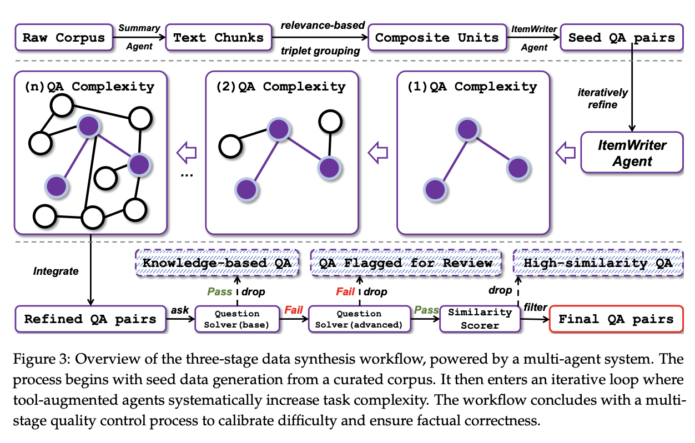
TODO Training
IterResearch uses an MDP framing: at every round, the model must produce a response (action) given the current state (report). This has a nice Markov property to it: since no history is retained in-context, each round is only dependent on the report which was generated last round.
This model is trained via Rejection Sampling Fine-Tuning, where trajectories are gathered using the IterResearch framing, and kept only if they arrive at the right answer eventually. This forms a dataset which allows the model to be fine-tuned to produce working trajectories more frequently.
TODO: look more into this minimal-loss downsampling section. Go into more detail on GSPO since I haven't read it yet.
The model is then further trained using reinforcement learning, leveraging Group Sequence Policy Optimization with matching reference answers as the reward signal.
Discussion
The WebResearcher paper is one of the simpler ones in the Tongyi DeepResearch wheelhouse. Using a text-based hidden state, you enable both parallelization and implicit context management, which seems like a clear advantage over mono-context approaches.
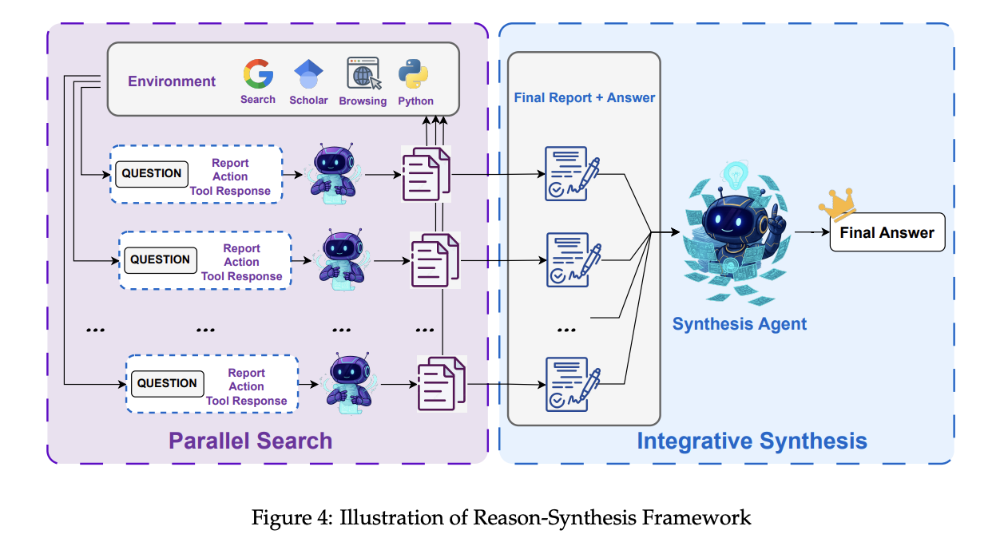
The big question is whether or not this framework suffers from information loss as it tries to compress more and more information into the developing report it updates on every step. It's possible this is not much of a concern for now (i.e. the damage from flooding context with noise might simply be greater than the damage from trying to compress too much information into a report34), but as the task complexity grows it will likely become an increasingly central element to the problem.
Information Synthesis: WebWeaver
WebResearcher and WebSailor-V2 are not to be confused with WebWeaver, which extends the formulation presented in WebResearcher to something a bit more pointed at a presentable final product. WebWeaver is a pure framework paper - what they produce in this paper is directly compatible with other LLMs used for research.
WebWeaver
While WebResearcher will iteratively write a report as it accumulates more documents, WebWeaver further decomposes this into a two-agent framework using a planner and a writer. The Planner will iteratively acquire evidence, update a "research outline", and repeat. The Writer will iteratively take the outline and write a report for each section, complete with citations, in order to produce the final artifact.
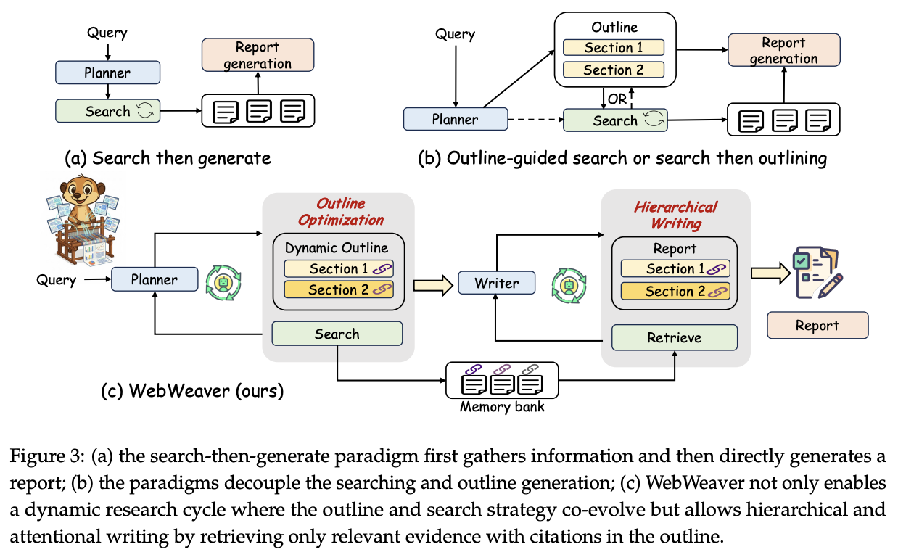
The central claim of this paper is:
- An outline boosts the quality of the writing
- Drafting the outline before searching relies on what the LLM already knows, defeating the purpose
- Therefore, drafting the outline as you search and writing as you accumulate information should improve the output
Putting this another way, this workflow is intended to make the model "write a report" closer to how a person would write a report. For example, the way I am writing this post: An initial lit review, an outline, reading papers, writing the sections as I read the papers, etc35.
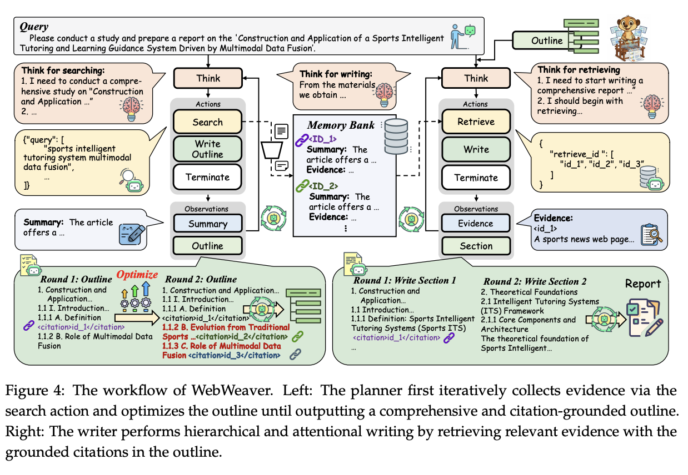
A major positive component of this is that now the specific citations are constrained to key sections in the outline. Because the planner is responsible for the outline (and the outline's citations), the writer can write a section of the final report while being much more easily able to retrieve the right data for what is happens to be writing. This is referred to as Hierarchical Retrieval and is a much more natural formulation compared to long-context-based or embedding-based retrieval augmented generation36.
Results
Because this framework can be used with any model trained to call research tools, their main results are evaluated by using this framework with other foundation models, and comparing to existing deep research platforms:
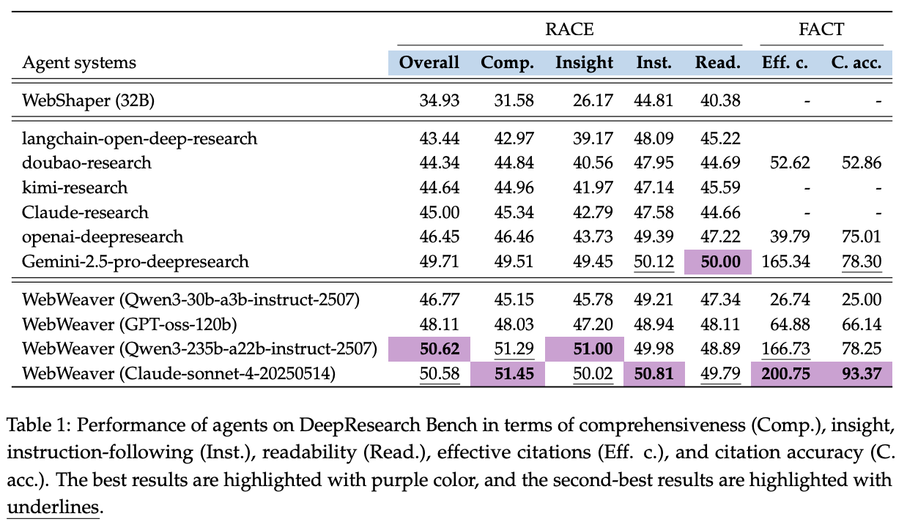 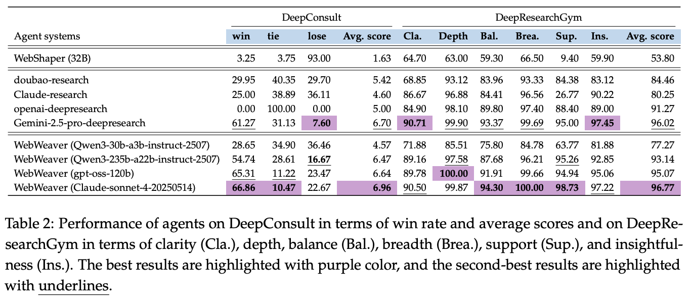
You can see here that WebWeaver with Sonnet 4 does solidly better than Claude's own research tool, showing off the strength of this approach. They show that more refinement loops yields better results37, cleaner context windows improves the performance, and the section-based writing strategy outperforms other approaches.
Critical for understanding how this translates to their Tongyi DeepResearch result, they create an 3k SFT dataset consisting of examples of a strong teacher model using the WebWeaver framework38. With 3k curated multi-turn trajectory examples, they fine tuned a 30b model on this data and saw hugely improved results on stuff like citation accuracy39 and DeepResearchGym40.
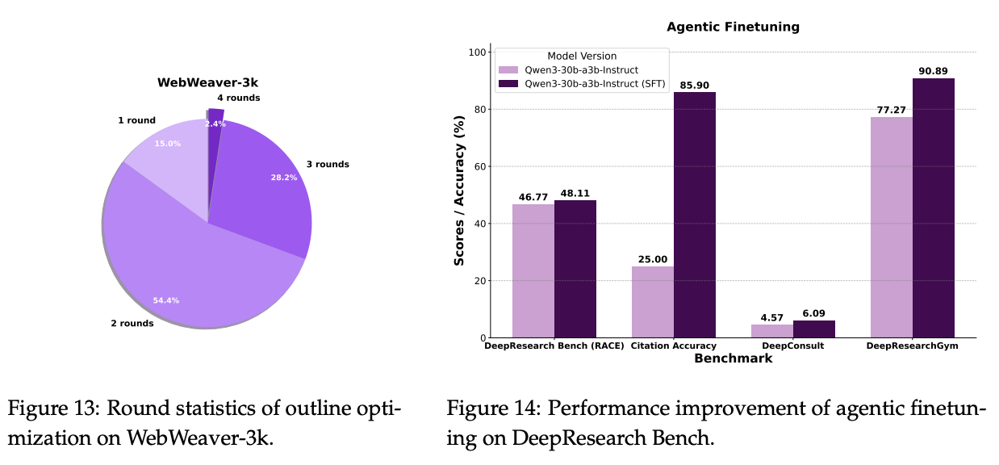
Takeaways
We've talked a lot up to now about how to make LLMs able to take actions over multiple turns, how to proactively go get documents to read, and then process them somehow before responding. But these have so far been mostly about simple question / answer problems. If the model doesn't know something, it can look up the answer, and then reply like it would normally.
The WebWeaver paper is our glimpse into how tool-equipped LLMs can actually produce something that looks like the output of a deep research tool, rather than just an extremely informed LLM response. The platonic ideal of a deep research tool is something like an essay, maybe a paper or a blog post, complete with links to other interesting and useful things to read41.
Context Compacting: ReSum
Even with so many clever tricks to keep the context manageable, it remains sort of inevitable that eventually context windows will just be filled anyways. ReSum is Tongyi's solution to the context-compacting problem: when you fill up your context, how do you compress what you already have so that you can keep working, but without losing too much context from what has already been seen?42
Aside: ReAct
We've glossed over the multiple mentions of the ReAct framework because of this paper, but we do have to touch upon it here. ReAct was a 2023 paper which was one of the earliest influential papers exploring reasoning and acting in large language models (hence: ReAct).
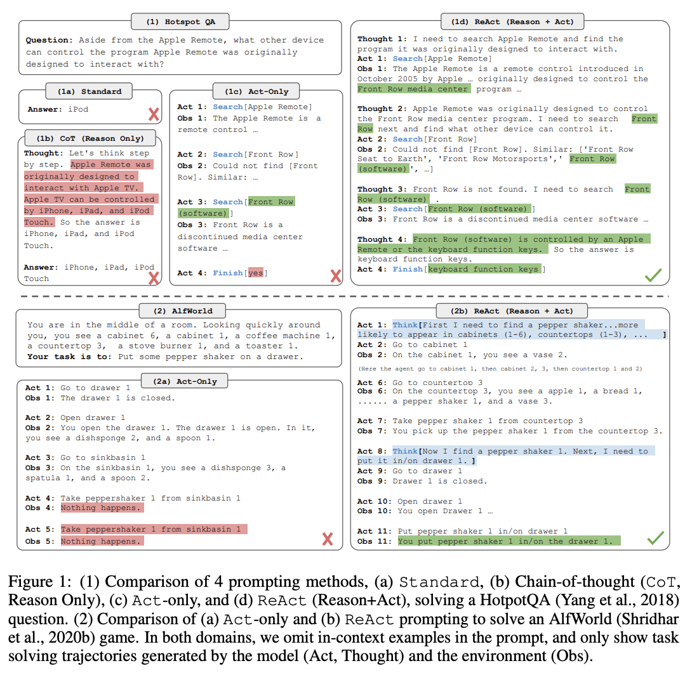
Back in 2023, we were still getting huge gains from prompting models with stuff like "Let's think step by step." This was a way to make language models output a bunch of tokens to walk through its answer before responding. As we all know, this is likely to make the model more likely to arrive at a correct answer.
This paper was super influential, in that it was one of the earliest papers that interleaved thinking steps and acting steps, equipping some extremely simple tools to the model. The idea behind this framework is super simple: first you ask the model to think, then you let the model pick from a number of actions. Once it takes the action, the environment will produce some sort of observation, and the loop repeats until it submits a final answer.
One of the primary results from this paper was that finetuning models with a small amount of successful ReAct trajectories improved performance a lot compared to similar approaches with other methods. This is a pretty relevant finding for our overall agentic LLM overview – we've known that models can improve at these multi-turn agent settings via rejection sampling for many years now.
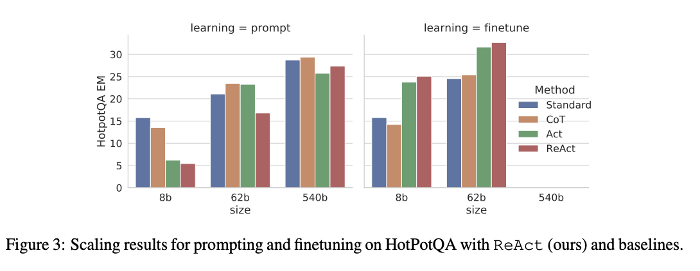
ReAct is one of the very very early examples of agent framework, and sees continued use to the present day since it's pretty difficult to design anything simpler than this to build an agent43.
ReSum
Tongyi has been leveraging ReAct for almost all previous works up to now44. However, for a truly multi-turn focused model, it seems likely that the model could just take so many turns thinking that the context is completely filled with now-irrelevant reasoning steps for prior sub-tasks. This is obviously not optimal: once I'm on turn 11, it's no longer important to me why I wanted to use the search tool on turn 2, only that I used it and what I found.
ReSum just introduces a summary tool to the ReAct framework. All this does is summarize everything that the model did before filling the context, and then kick off a new chat with the original query plus the summary so far.

This paper has three primary contributions:
- Introducing the summary tool to the ReAct framework.
- Fine-tuning a small 30B/3B active model for better ReSum-friendly summarization on summaries generated from off-the-shelf big foundation models (Qwen3-235B, DeepSeek-R1, gpt-oss-120b).
- Formulating ReSum-GRPO, RL post-training to make models better at using ReSum through experience.
The tool is really simple to understand: it triggers whenever the agent decides to call the summary tool, or automatically if the number of tokens passes some pre-defined threshold. This works fine off the shelf for really big models, which are already good at summarizing long texts. The fine-tuned model is really basic also: they collect a number of (Conversation, Summary) pairs generated with big models and fine-tune a small MoE model with it, which makes it better at the task.
ReSum-GRPO
ReSum-GRPO is a bit more involved. Since ReSum creates a "new type" of query (i.e. a query with previous context concatenated to it), the authors argue RL will bring this type of query more in-distribution.
The core modification done to vanilla GRPO is to treat a single end-to-end trajectory into \(K+1\) segments, where \(K\) is the number of summarization events. Your single end-to-end trajectory gets a single reward signal based on correctness (here determined via LLM-as-judge), which is then broadcasted to all the segments.
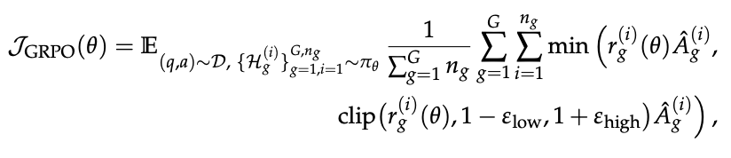
Basically: ReSum GRPO is the same as regular GRPO for all short trajectories, but for long trajectories where the summary event occurs at least once, the reward for the full trajectory gets broadcasted to all the intermediate segments between summary events (or the beginning or end). This improves performance by 4-5%.
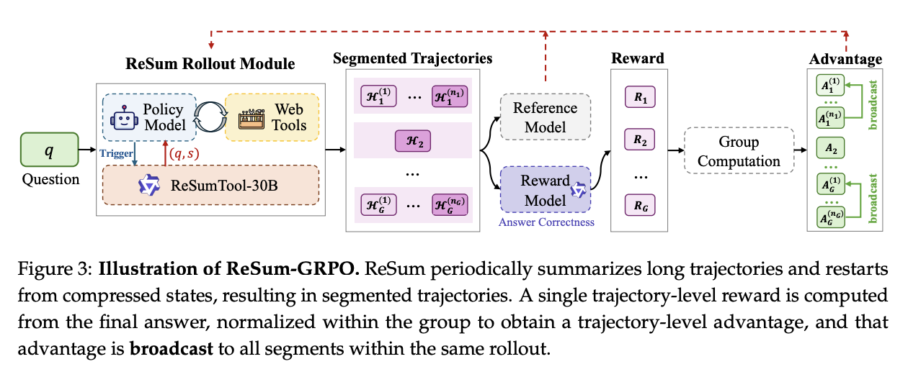
Takeaways
ReSum is perhaps the most naive possible solution to this sort of problem. It is likely possible to do some sort of more complicated latent compression prompt tuning or something, if you had a larger training budget and believed this to be a more effective compacting strategy.
But the text-to-text solution here seems to work more or less fine. You do obviously lose resolution here compared to not needing to auto-summarize your text, so it's probably not appropriate to call this something silly like "infinite context length". But overall this is a naive approach that represents a solid, easy-to-implement initial try at the problem at hand.
Tools: Towards General Agentic Intelligence via Environment Scaling
Rounding out the Qwen paper drop is Towards General Agentic Intelligence via Environment Scaling. So far we've mostly been dealing with very simple web search / code execution / calculator type tools from the original ReAct formulation. How do we go from here to a model which can use all sorts of APIs, even new ones it has never seen before? This paper gives some insight on how they created a large volume of synthetic data surrounding API calls and scaled them up, making the model specifically strong at using tools in general.
Task Construction
Much of the data produced in the other mentioned works has taken a reverse framing, where a bunch of tools are called, and then trajectories are synthesized based on questions that could have been solved by calling that tool. This works okay for short trajectories, but doesn't scale well to longer trajectories unless you sacrifice realism (e.g. making up some really strange query which would justify a strange tool call).
The flipside to this approach is by simulating agent-human interactions. This creates more reasonable trajectories, but is hard to scale without progressively more challenging environments for the agent to operate within. This is the primary contribution of this paper: a way to automatically build simulated environments to gradually expand the range of tasks over time.
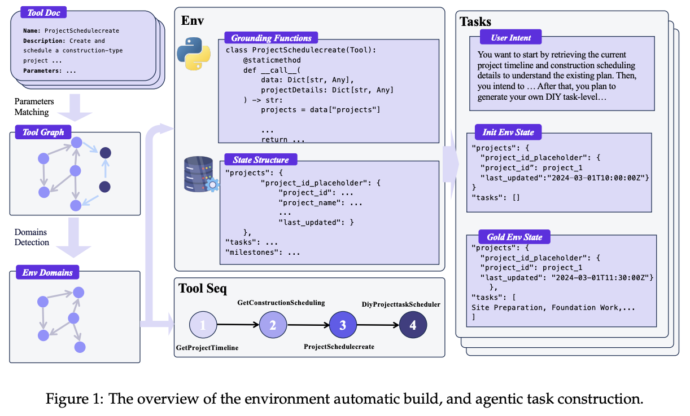
The way this pipeline works is by:
- Scraping a huge 30k+ database of APIs from the internet / other repos
- Constucting a tool graph
- Nodes are linked if their vector similarity is above some predefined threshold
- Clusters are identified using Louvain community detection
- Each community gets a generated domain-specific database structure, and gets formalized in python
Once this is all assembled, synthetic agentic tasks are generated by initializing some environment state, performing a random walk over connected nodes in the tool graph, then perform the tool calls in sequence to observe what happens.
Agent Experience Learning
With these chained tool calls, an LLM generates simulated user queries and agent responses that can be inserted such that the tool calls solve some sort of stated problem brought forward by the user. This forms a full end-to-end simulated user-agent interaction, which can then be further filtered to remove invalid trajectories, corrupted final states, and malformed function calls.
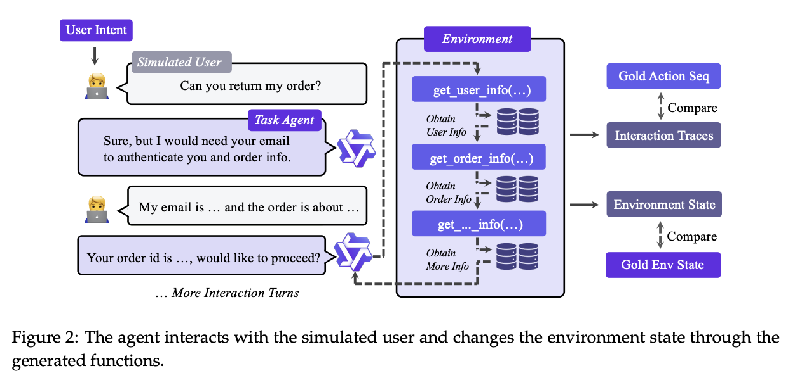
These sequences are then fine-tuned upon (with the user messages and the tool responses excluded) such that the model trains upon lots of trajectories of a large variety of different types of tools. This fine-tuning is done in two stages, the first with a lot of available APIs for very broad, versatile problems, and the second with more domain-constrained specialized settings. TODO: what does this even mean? It's not clear from the text.
Results / Discussion
This model does fairly well at using all sorts of different type of tools, and usually improves the base models they are applied to on general tool-calling benchmarks by a handful of percentage points. Nothing outrageous, it's a modest improvement that seems to generalize solidly well to e.g. ACEBench-zh due to the sheer size.
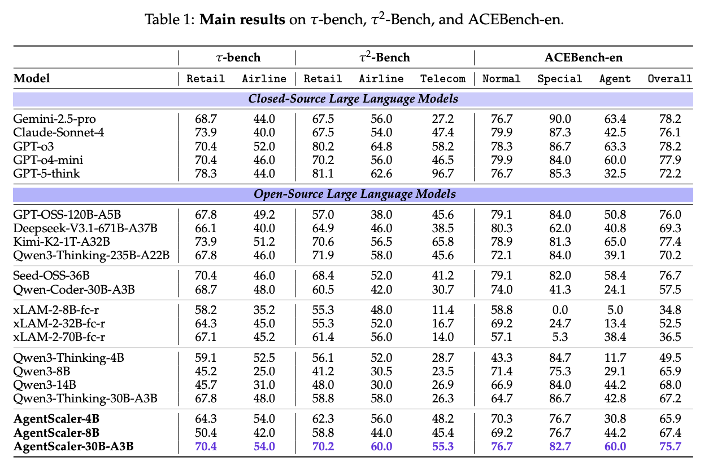
But while this finetuning approach helps a lot with formulating tool calls, it weakens substantially when many calls are made over more turns. Operating well with long context and strong multi-turn ability are definitely still separate problems altogether from function calling, even if all of them are necessary for a well constructed agent.
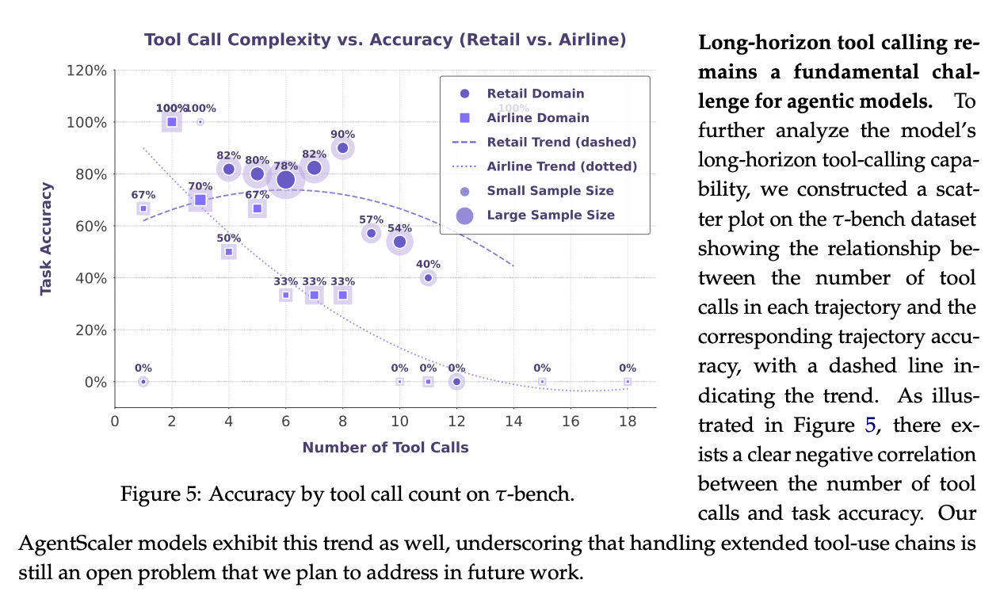
Where Do We Go From Here
There are lots of viable directions that agentic models can go from here. Many big labs are focusing on this problem, so it's likely that the field will move fast.
There have been a lot of exciting architectural developments in recent months that seem explicitly exciting for the agentic framing, whether that's for research or code agents. Qwen3-Next makes a lot of interesting developments on this front: a ultra-sparse model with most layers using Gated DeltaNet, using deepseek-v3-style MTP for speculative decoding, etc. DeepSeek-V3.2-Exp recently introduced DeepSeek Sparse Attention which is an MLA-compatible sparse attention mechanism which vastly reduces long-context cost seemingly with minimal performance hit. Since I started writing this post, Zhipu released GLM-4.6 which extends the context window and improves agent performance.
Agent work is still largely nascent, as far as LLM work goes. Many of the techniques outlined above feel like level 1 methods for achieving the desired outcome (use LLM to summarize! Use LLM to verify! Use LLM to make agentic data!) and I could easily see lots of them being surpassed by more powerful variants in the near future.
When GPT-5 was released, METR put out an interesting report outlining that the length of task a model could complete has been steadily growing. Roughly every 213 days the length of task competable by a frontier model doubles.
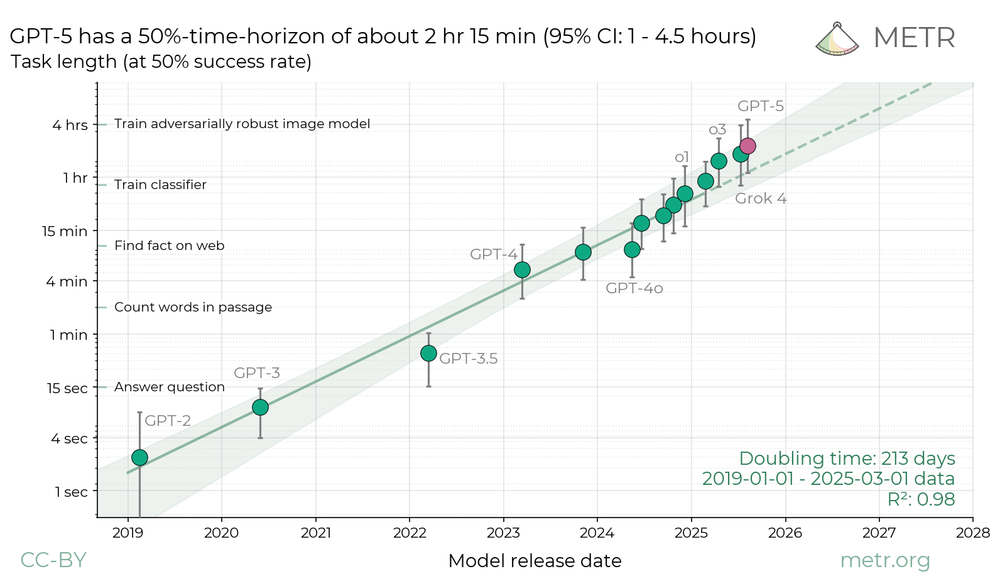
Agentic models seem focused on this sort of time horizon problem. It may be that soon models will be capable of working autonomously for very long periods of time, perhaps days or weeks, without exploding due to saturated context windows. It's unclear what sorts of advances are occurring inside frontier labs, but I'd expect developments pointed at pushing this number up will begin to take a first-class-citizen-type role moving forwards, especially as existing benchmarks continue to saturate45.
Time will tell.
Footnotes:
I'm not big on the term "vibe coding" but you could argue that making the model do most of the work is a goal of a lot of these labs. I prefer to call these tools "solo pair programming tools" but I think that might only be me using them that way.
To be more precise, Qwen uses the output logits from teacher models rather than just fine-tuning on samples. I think calling this is "distillation" is much more appropriate to the historical usage of the term, but recently fine tuning on samples has been called "distillation" a lot more often also.
They claim as much in the Long-CoT Cold Start section, but it's nebulous where exactly this data comes from specifically.
It's simple to the point of feeling kinda silly. Just SFT the behavior in, bro, what could go wrong.
They use the in-training model here, since they worried that if they just used QwQ outputs that the SFT phase would harm the reasoning component. It's essentially just performing SFT on its own outputs, but with the chat template added.
I don't find this too compelling. I don't think this claim really feels any different from just saying "cutting the thinking degrades performance, forcing the model to spin longer before answering improves performances" and they don't have any ablations where they show that the hybrid model is more robust under this regime compared to a regular reasoning model with the same restrictions.
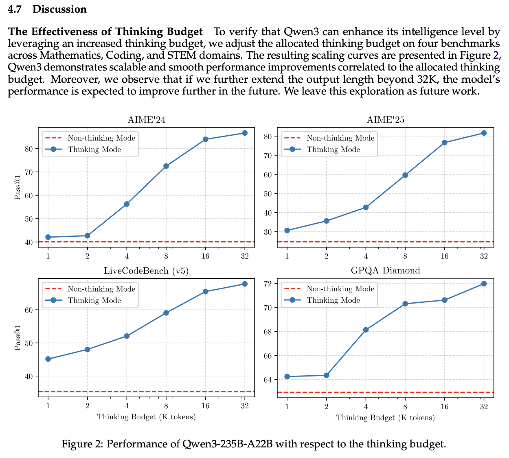
It's important to keep in mind that Qwen3 was trained on more than twice as many tokens as DeepSeek-V3, with a training budget slightly larger than even Llama 4's 30T. The non-thinking result is definitively "just okay", the interesting thing is that it's a bolted-on mode of a model capable of that reasoning mode.
Or, relatedly, that they need to seek some sort of professional help.
This is one of those insights I'm pretty confident lots of other labs must have independently arrived at. A lot of these LLM papers are pretty light on details about synthetic data generation despite lots of allusions to it, so I was excited to see some actual experiments outlined here.
I have no idea what this could be, details provided are zero.
This was probably still set to be quite high. This penalty was specifically intended to prevent the emergent reasoning behavior that RLVR models will sometimes learn, but it seems like given the high output token count of this model that the learned behavior was to come up close against that threshold without incurring the penalty.
I don't like this term. This is pretty much still just pretraining even if it's medium-size with instruction data. Instruction tuning data in pretraining has been around forever, I don't think the term is that distinguishing from other works.
I think functionally this is the same as cold-start long CoT data
See, this is more different from phase 2 of post training compared to the supposed "mid-training" is from pretraining. I think the only reason this step isn't called "mid training" is because it contains SFT (typically considered post training) and also "mid-post-training" and "late-post-training" would sound too ridiculous.
Compare to DeepSeek making allusions about curriculum learning in their GRPO works, but not providing much detail.
This is confusingly labeled as "single stage" right after the diagram saying they use two stages for curriculum learning, but it's single stage for context length and two-stage for difficulty.
I'm a little surprised to have not seen so much reward-based exploration scheduling like this up until now. I know there are a bunch of issues with this in standard RL e.g. exploration bonus not being stationary enough for this to always work, but I have seen some stuff about this sort of thing being good for environments with sparse rewards.
This part seems mostly done by hand.
This is why they can afford to get away with removing the KL loss term from GRPO. There's not much risk of the model deviating too far from the original SFT policy, which is going to get discarded anyways once they cook up a new one.
The paper also goes into some detail about the infra, which again I will be omitting for brevity / recognizing that I'm out of my depth in understanding it well enough to explain it.
Qwen models always seem to benchmark a little higher than their practical utility, but the point here is that it's very small and works pretty well.
Frankly I never liked this benchmark being used for deep research benchmarking. I always thought this was supposed to be more of a native capabilty dataset, but it quickly became a browsing+tool use benchmark once OpenAI Deep Research used it to illustrate how looking up the the answers relevant information could greatly improve performance at the benchmark. Everybody followed suit I guess, to level the playing field back out.
These are further rejection sampled with LLM-as-Judge to get rid of examples that seem obviously unlikely to result in success.
Also for aesthetic reasons: nobody wants this model to dig around for 20 minutes searching documents and then come back with a one word response that might be wrong.
Again further rejection sampled via LLM-as-Judge.
I think it would have been more sensible to release one very large paper for this single project, but Tongyi in general seems to have engagement-based or volume-based KPIs for arxiv papers / model downloads / releases / etc. Splitting this up in this fashion definitely makes the project harder to follow and understand what order everything happens in, but I suppose it's still much better than a lab just not publishing anything at all.
You could probably call Agentic CPT "Agentic CMT" given that it's performed on top of a pretrained base model. But it's fine.
This entire section is frustratingly vague.
Again, very light on detail here, but it could be the case that heavily penalizing length limit exceeded will provide signal that the model should use fewer turns whenever possible, which is undesirable.
Which is, uh, an unusual experiment to be performing.
A funny framing here is that this approach is an extremely difficult needle in a haystack test.
Maybe a pedant point but I don't think it's true that this scales "arbitrarily", since if you fix the size of the report there's an upper bound to information density, and if you don't fix the size of the report it obviously can also grow beyond the context size.
I believe xAI does this also, with Grok Heavy.
Indeed they show more or less as much in ablations
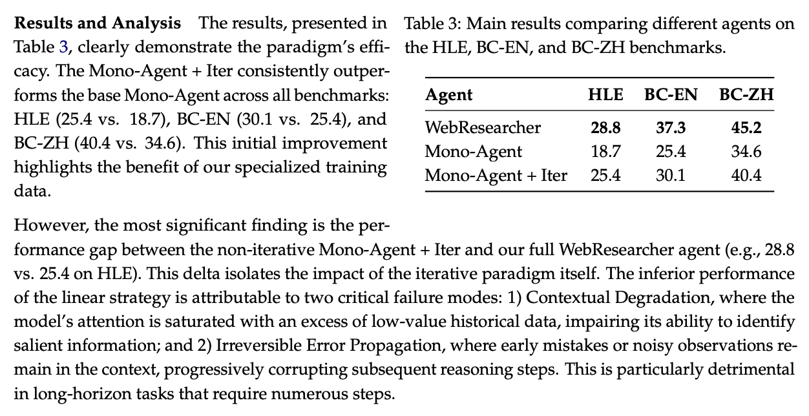
sweats nervously the robots could never take my job, right?
I've never been a huge RAG guy, especially as long context grows cheaper over time. DeepSeek-V3.2-Exp technical report is one such example of what I mean: a sparse attention mechanism that reaches performance parity with their regular latent attention but much cheaper, leading to API costs slashed by 50%. Very long context windows, sparse attention making using that context cheaper, and more natural formulations like hierarchical retrieval instead of using embeddings seems clearly much more likely to be the future of managing external sources of knowledge.
Another instance of turn count as scaling test-time compute.
Specific model kept suspiciously unmentioned.
This is maybe something similar in spirit to DeepSeek's reasoner distillation result, but for agentic / research setting: even with just 3k examples they can teach a much weaker model to emulate this behavior much easier than it would have been to train the model from scratch to do just as well.
90.89 is weaker than using a very large model but not by much: using qwen3 235b gets 93, openai deepresearch gets 91.
In practice for coding models I think it's usually better to kick it off from scratch before this happens, but for research models (i.e. models which are multi-turn from the model's perspective but mostly more or less single-turn from the user's perspective) it's not so doable.
Many takes during this time period were: "agents are just an llm wrapped inside a while loop" which was certainly more literally true at the time compared to now.
More complicated frameworks are generally mostly bloat in my opinion.
or get trained on directly, for that matter.